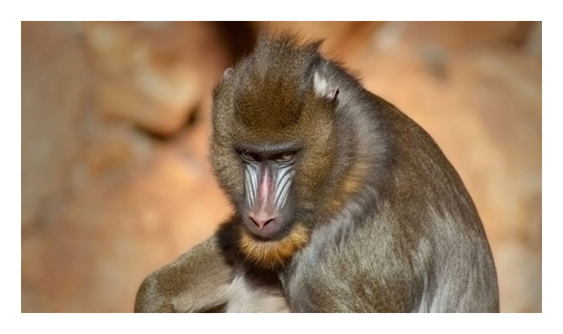
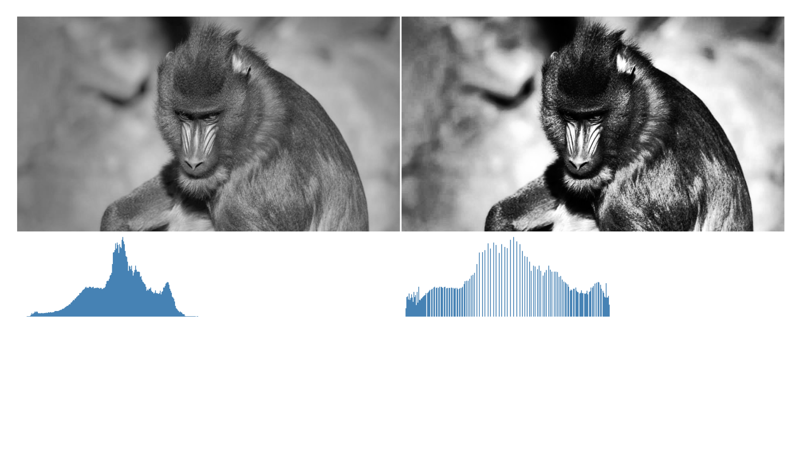

3Spatial Operations: Intensity, Histogram, and Filtering
This chapter delves into image processing in the spatial domain, starting from the direct manipulation of pixels and histograms for contrast enhancement, to the application of local filters via convolution for smoothing, noise reduction, and edge detection. The goal is to develop the mathematical and computational intuition that underpins much of modern Computer Vision algorithms.
3.1 Objectives
By the end of this chapter, you will be able to:
Manipulate intensity and pixels: Perform saturated arithmetic operations (mm::addm, mm::subm) and bitwise logic operations (mm::band, mm::bor, mm::bnot) for combining and selecting regions of interest (ROI), and apply alpha blending (mm::blend) for weighted image fusion;
Process histograms: Interpret the histogram as a tonal diagnostic and apply global equalization via CDF (mm::equalize); in the Python track, also adaptive equalization (CLAHE) and histogram specification for tonal profile transfer between images;
Understand spatial fundamentals: Understand neighborhood, border padding (mm::pad), and the difference between cross-correlation (mm::conv) and convolution — including why asymmetric kernels such as Sobel produce distinct results in the two operations;
Apply smoothing filtering: Use the mean filter (mm::blur, or mm::conv with a uniform kernel) and the Gaussian filter (mm::gaussian) for noise reduction, understanding the advantage of radial weighting and Gaussian separability;
Apply enhancement filtering: Use the Laplacian \(w_4\) and \(w_8\) (mm::laplacian) for isotropic edge enhancement, the Sobel operator (mm::sobel) for gradient magnitude — and, in the Python track, the directional decomposition \(G_x\), \(G_y\), and angle —, and Unsharp Masking (mm::usm) for high-frequency amplification controlled by the parameter \(k\);
Use order filters: Apply the median filter (mm::median) for salt-and-pepper noise removal, understanding why its nonlinear nature and robustness to outliers make it superior to linear filters in this scenario;
Solve practical problems: Chain techniques into preprocessing pipelines (equalization → Gaussian → Canny; with CLAHE replacing equalization in the Python track) and use the morph functions (mm::conv, mm::histImg, mm::equalize, mm::drawImgKernel) for didactic analysis and visualization of each step.
3.2 Intensity Level Operations
The most elementary level of image processing acts directly on pixel values, without considering neighborhood. These operations—called point operations—are the fastest computationally and form the basis for more complex techniques.
Formally, a point transformation can be described as:
\[
g(x,y) = T[f(x,y)]
\tag{3.1}\]
where \(f(x,y)\) is the input image, \(g(x,y)\) is the output, and \(T\) is a function applied to each pixel individually.
3.2.1 Preparing the Practical Environment
The following block loads the morph library from the repository (the morph.py module and, in the C++ track, also the morph.hpp used in the #include of compiled cells).
import os, urllib.requestos.makedirs("tmp/state", exist_ok=True) # C++ track build artifacts (.cpp, binary, PNGs)url ="https://raw.githubusercontent.com/fzampirolli/pdi-vc/master/morph/config.py"ifnot os.path.exists("config.py"): urllib.request.urlretrieve(url, "config.py")# The kernel is Python even on the C++ track: `mm` (morph.py) is used by the# simulators, by the display of the figures the C++ binary generates, and by# the mm::Image state between cells. cpp=True also downloads the compiled track# (morph.hpp + stb_image*.h), used in the #include of the %%writefile *.cpp cells.import configconfig.setup(cpp=True)from morph import mmimport numpy as np
✅ Environment ready. Morph: 1.1.9 | OpenCV: 5.0.0
As the object of study throughout this chapter, we will use the wildlife images presented in Figure 3.1 and Figure 3.3. From them, we will explore spatial operations on intensity, histograms, and filtering, analyzing their effects on enhancement, smoothing, noise reduction, and edge detection, in order to understand the mathematical and computational fundamentals of DIP.
%%writefile tmp/fig_03_mandrill.cpp#define MM_OUT "tmp/fig_03_mandrill.png"//| label: fig-03-mandrill//| fig-cap: "*Mandrill* (*Mandrillus sphinx*) photographed in its natural environment in South Africa. Credit: Carlos Guilherme Rodrigues (CC BY-SA 3.0)."//| echo: true#include "morph.hpp"#include <iostream>#include <filesystem>int main() { mm::Image img_color = mm::read("https://upload.wikimedia.org/wikipedia/commons/9/9b/Carlos_Guilherme_Rodrigues_%2876515283%29.jpeg"); mm::Image img_gray = mm::gray(img_color); mm::show(img_color, MM_OUT);// [pdi:state-io] auto-generated — do not edit by handstd::filesystem::create_directories("tmp/state");mm::write(img_gray, "tmp/state/img_gray_8.png");// [pdi:state-io:end]return0;}
Overwriting tmp/fig_03_mandrill.cpp
!g++-I. -std=c++17 tmp/fig_03_mandrill.cpp -o tmp/fig_03_mandrill \&& ./tmp/fig_03_mandrill \&& test -f "tmp/fig_03_mandrill.png"\|| echo "⚠ mm::show não gravou tmp/fig_03_mandrill.png"
mm.show(mm.read("tmp/fig_03_mandrill.png"))

Figure 3.1: Mandrill (Mandrillus sphinx) fotografado em ambiente natural na África do Sul. Crédito: Carlos Guilherme Rodrigues (CC BY-SA 3.0).
3.2.2 Arithmetic Operations
Arithmetic operations between images are widely used in DIP to combine, compare, or enhance information. Image subtraction is especially powerful for detecting differences between two frames — for example, in removing static backgrounds in surveillance cameras:
\[
g(x,y) = f_1(x,y) - f_2(x,y)
\tag{3.2}\]
Saturated addition limits the result to the interval \([0, 255]\): values above 255 are clamped to 255, avoiding the silent overflow of the uint8 type (e.g., \(200 + 100 = 44\) instead of 300). Saturated subtraction applies the same principle on the lower side: negative values are clamped to 0.
WarningSaturation and overflow
Arithmetic operations on uint8 suffer from silent overflow: \(200 + 100 = 44\) (not 300). mm::addm and mm::subm perform automatic saturation, clamping the result to \([0, 255]\). Blending uses fractional weights: mm::blend operates internally in floating point and only then rounds and saturates to uint8.
Figure 3.2 demonstrates the addition of a constant (brightening) and the subtraction of a constant (darkening with saturation at 0).
%%writefile tmp/fig_03_aritmetica.cpp#define MM_OUT "tmp/fig_03_aritmetica.png"#include "morph.hpp"#include <iostream>#include <vector>#include <filesystem>int main() {// [pdi:state-io] auto-generated — do not edit by handmm::Image img_gray = mm::_read_state("tmp/state/img_gray_8.png");// [pdi:state-io:end]//// Operations: log transformation, gamma correction, and addition.//int fundo =60; mm::Image img_add = mm::addm(img_gray, fundo); mm::Image img_sub = mm::subm(img_gray, fundo); mm::show( std::vector<mm::Image>{img_gray, img_add, img_sub}, MM_OUT, std::vector<std::string>{"Original", "addm (+60)", "subm (−60)"},3 );// [pdi:panel-io] auto-generated — do not edit by handstd::filesystem::create_directories("tmp");mm::write(img_gray, "tmp/fig_03_aritmetica_0.png");mm::write(img_add, "tmp/fig_03_aritmetica_1.png");mm::write(img_sub, "tmp/fig_03_aritmetica_2.png");// [pdi:panel-io:end]return0;}
Overwriting tmp/fig_03_aritmetica.cpp
!g++-I. -std=c++17 tmp/fig_03_aritmetica.cpp -o tmp/fig_03_aritmetica \&& ./tmp/fig_03_aritmetica \&& test -f "tmp/fig_03_aritmetica.png"\|| echo "⚠ mm::show não gravou tmp/fig_03_aritmetica.png"
When \(\alpha = 1\), only image \(f_1\) is obtained; when \(\alpha = 0\), only \(f_2\). Intermediate values produce a smooth transition between the two, being widely used in image composition, layer overlaying, watermarks, and visual blending effects.
For the combination to produce a coherent result, it is necessary to align the regions of interest beforehand. In Figure 3.4, the leopard’s face is cropped with mm::crop(img_leop_gray, 250, H-300, 100, W-200) and the mandrill’s facial region with mm::crop(img_gray, 100, 400, 380, 530), so that the eyes and facial structure are approximately aligned. The leopard crop is then resized (mm::resize) to the mandrill’s dimensions before the blending.
mm::blend performs the operation in floating point — avoiding overflow in the calculations with fractional weights — and only then rounds and saturates the result to uint8.
%%writefile tmp/fig_03_leopardo.cpp#define MM_OUT "tmp/fig_03_leopardo.png"//| label: fig-03-leopardo//| fig-cap: "Retrato de um leopardo (*Panthera pardus*) em ambiente natural. Crédito: C. Brück (CC BY-SA 4.0)."//| echo: true#include "morph.hpp"#include <filesystem>int main() { mm::Image img_leop = mm::read("https://upload.wikimedia.org/wikipedia/commons/9/92/Leopard_%28Panthera_pardus%29_portrait.jpg"); mm::Image img_leop_gray = mm::gray(img_leop); mm::show(img_leop, MM_OUT);// [pdi:state-io] auto-generated — do not edit by handstd::filesystem::create_directories("tmp/state");mm::write(img_leop, "tmp/state/img_leop_12.png");mm::write(img_leop_gray, "tmp/state/img_leop_gray_12.png");// [pdi:state-io:end]return0;}
Overwriting tmp/fig_03_leopardo.cpp
!g++-I. -std=c++17 tmp/fig_03_leopardo.cpp -o tmp/fig_03_leopardo \&& ./tmp/fig_03_leopardo \&& test -f "tmp/fig_03_leopardo.png"\|| echo "⚠ mm::show não gravou tmp/fig_03_leopardo.png"
mm.show(mm.read("tmp/fig_03_leopardo.png"))
Figure 3.3: Retrato de um leopardo (Panthera pardus) em ambiente natural. Crédito: C. Brück (CC BY-SA 4.0).
%%writefile tmp/fig_03_blend.cpp#define MM_OUT "tmp/fig_03_blend.png"//| label: fig-03-blend//| fig-cap: "*Alpha blending* entre recortes alinhados de mandrill e do leopardo (@fig-03-leopardo) para diferentes valores de α. Em α=1 vê-se apenas mandrill; em α=0, apenas o leopardo; valores intermediários fundem os olhares das duas imagens proporcionalmente."//| echo: true//| output: true#include "morph.hpp"#include <vector>#include <string>int main() {// [pdi:state-io] auto-generated — do not edit by handmm::Image img_gray = mm::_read_state("tmp/state/img_gray_8.png");mm::Image img_leop_gray = mm::_read_state("tmp/state/img_leop_gray_12.png");// [pdi:state-io:end]// Recortes alinhados: rosto do leopardo e região facial do mandril mm::Image leo = mm::crop(img_leop_gray, 250, img_leop_gray.h -300, 100, img_leop_gray.w -200); mm::Image mandrill = mm::crop(img_gray, 100, 400, 380, 530); mm::Image leo_r = mm::resize(leo, mandrill.w, mandrill.h, "bilinear"); mm::show( std::vector<mm::Image>{mm::blend(mandrill, leo_r, 1.0), mm::blend(mandrill, leo_r, 0.8), mm::blend(mandrill, leo_r, 0.6), mm::blend(mandrill, leo_r, 0.4), mm::blend(mandrill, leo_r, 0.2), mm::blend(mandrill, leo_r, 0.0)}, MM_OUT, std::vector<std::string>{"α=1.0", "α=0.8", "α=0.6", "α=0.4", "α=0.2", "α=0.0"},6 );return0;}
Overwriting tmp/fig_03_blend.cpp
!g++-I. -std=c++17 tmp/fig_03_blend.cpp -o tmp/fig_03_blend \&& ./tmp/fig_03_blend \&& test -f "tmp/fig_03_blend.png"\|| echo "⚠ mm::show não gravou tmp/fig_03_blend.png"
Figure 3.4: Alpha blending entre recortes alinhados de mandrill e do leopardo (Figure 3.3) para diferentes valores de α. Em α=1 vê-se apenas mandrill; em α=0, apenas o leopardo; valores intermediários fundem os olhares das duas imagens proporcionalmente.
3.2.4 Logical Operations and Bitwise Masks
Bitwise logical operations (AND, OR, and NOT) act directly on the bits of each pixel and are the foundation for creating and applying masks (masks) — binary images with only 0 (black) and 255 (white) used to isolate Regions of Interest (ROI).
The behavior of each operation stems from the binary representation of 255 (11111111) and 0 (00000000):
AND with the mask: where \(m = 255\), the original bits are preserved; where \(m = 0\), the pixel is zeroed. Result: ROI cropping. \[g(x,y) = f(x,y) \;\text{AND}\; m(x,y)
\tag{3.4}\]
OR with the mask: where \(m = 255\), the pixel is forced to white; where \(m = 0\), the original value is retained. Result: ROI highlighting.
NOT (without mask): inverts all bits (\(g = 255 - f\)), producing the photographic negative of the image.
Figure 3.5 illustrates the three operations applied to the mandrill image with a circular mask.
%%writefile tmp/fig_03_logica.cpp#define MM_OUT "tmp/fig_03_logica.png"#include "morph.hpp"#include <iostream>#include <filesystem>int main() {// [pdi:state-io] auto-generated — do not edit by handmm::Image img_gray = mm::_read_state("tmp/state/img_gray_8.png");// [pdi:state-io:end]//| label: fig-03-logica//| fig-cap: "Binary bitwise operations with circular mask: AND (ROI isolation), OR (ROI illumination) and NOT (negative)."//| echo: true//| output: trueint h = img_gray.h;int w = img_gray.w;// Filled circular mask, centered on the image (mm.circle draws the// disk; the didactic version, pixel-by-pixel radius test, is mm.circle0). mm::Image mask_circ(h, w); mask_circ = mm::circle(mask_circ, w /2, h /2, std::min(h, w) /3-10, 255, -1);// Operations via morph mm::Image img_not = mm::bnot(img_gray);// NOT: photographic negative mm::Image img_and = mm::band(img_gray, mask_circ);// preserves only the circular ROI mm::Image img_or = mm::bor(img_gray, mask_circ);// illuminates the mask region mm::show( std::vector<mm::Image>{img_gray, img_and, img_or, img_not}, MM_OUT, std::vector<std::string>{"Original", "AND (circular ROI)", "OR (illuminates ROI)", "NOT (negative)"},4 );// [pdi:panel-io] auto-generated — do not edit by handstd::filesystem::create_directories("tmp");mm::write(img_gray, "tmp/fig_03_logica_0.png");mm::write(img_and, "tmp/fig_03_logica_1.png");mm::write(img_or, "tmp/fig_03_logica_2.png");mm::write(img_not, "tmp/fig_03_logica_3.png");// [pdi:panel-io:end]return0;}
Overwriting tmp/fig_03_logica.cpp
!g++-I. -std=c++17 tmp/fig_03_logica.cpp -o tmp/fig_03_logica \&& ./tmp/fig_03_logica \&& test -f "tmp/fig_03_logica.png"\|| echo "⚠ mm::show não gravou tmp/fig_03_logica.png"
[1] Original
[2] AND (circular ROI)
[3] OR (illuminates ROI)
[4] NOT (negative)
where \(r_k\) is the \(k\)-th intensity level, \(n_k\) is the number of pixels with that intensity, and \(L\) is the total number of levels (typically 256 for 8 bits). The normalized histogram estimates the probability of each level:
\[
p(r_k) = \frac{n_k}{MN}
\tag{3.6}\]
where \(MN\) is the total number of pixels. As a global statistic, the histogram does not carry positional information, but it reveals essential characteristics such as average brightness, contrast, and tonal distribution. In practice, mm::hist(img) returns the count vector \(h(r_k)\), which serves both for visualization (via mm::histImg) and for calculations such as the cumulative distribution function (CDF) and equalization.
NoteHistogram Interpretation
Narrow on the left: underexposed image (dark).
Narrow on the right: overexposed image (bright).
Concentrated in the center: low contrast.
Spread across the entire range: high contrast, good utilization of the available tones.
Figure 3.6 presents the histogram of the mandrill image, as well as darkened (mm::subm) and brightened (mm::addm) versions. The shift of the intensity distribution to the left and to the right is observed, respectively. Note that the range represented on the \(x\)-axis does not necessarily correspond to the entire 0 to 255 range.
%%writefile tmp/fig_03_histograma.cpp#define MM_OUT "tmp/fig_03_histograma.png"//| label: fig-03-histograma//| fig-cap: "Histogramas da imagem original, de uma versão escurecida (−80) e de uma clareada (+80). A subtração/adição satura em 0 e 255."//| echo: true//| output: true#include "morph.hpp"#include <iostream>#include <vector>#include <string>int main() {// [pdi:state-io] auto-generated — do not edit by handmm::Image img_gray = mm::_read_state("tmp/state/img_gray_8.png");// [pdi:state-io:end] mm::Image img_dark = mm::subm(img_gray, 80); mm::Image img_high = mm::addm(img_gray, 80); mm::show( std::vector<mm::Image>{img_gray, img_dark, img_high, mm::histImg(img_gray), mm::histImg(img_dark), mm::histImg(img_high)}, MM_OUT, std::vector<std::string>{"Original", "Escurecida (-80)", "Clareada (+80)","Histograma - original", "Histograma - escurecida", "Histograma - clareada"},3 );return0;}
Overwriting tmp/fig_03_histograma.cpp
!g++-I. -std=c++17 tmp/fig_03_histograma.cpp -o tmp/fig_03_histograma \&& ./tmp/fig_03_histograma \&& test -f "tmp/fig_03_histograma.png"\|| echo "⚠ mm::show não gravou tmp/fig_03_histograma.png"
[1] Original
[2] Escurecida (-80)
[3] Clareada (+80)
[4] Histograma - original
[5] Histograma - escurecida
[6] Histograma - clareada
mm.show(mm.read("tmp/fig_03_histograma.png"))
Figure 3.6: Histogramas da imagem original, de uma versão escurecida (−80) e de uma clareada (+80). A subtração/adição satura em 0 e 255.
3.3.1 Histogram Equalization
Histogram equalization redistributes intensities so that the resulting histogram is as uniform as possible. The mapping is given by the cumulative distribution function (CDF):
The transformation is monotonic: frequent levels receive larger intervals in the output domain (greater separation → more contrast), while rare levels are compressed.
The complete algorithm, in five steps, is presented in Table 3.1.
Table 3.1: Histogram equalization algorithm.
Step
Operation
Formula
1
Histogram
\(h[k] \leftarrow\) number of pixels with intensity \(k\), \(k=0\ldots L-1\)
\(g[i,j] \leftarrow \text{lut}[f[i,j]]\) (for every pixel)
Note in Figure 3.7 that equalization redistributes the existing tones to more spaced positions in the range \([0, L-1]\), but it does not create new tones — the equalized image still has exactly 3 distinct tones, now at \(\{1, 5, 7\}\) instead of \(\{2, 3, 4\}\).
%%writefile tmp/fig_03_equalizacao_didatica.cpp#define MM_OUT "tmp/fig_03_equalizacao_didatica.png"//| label: fig-03-equalizacao-didatica//| fig-cap: "Equalização de histograma numa imagem 5×5 de 3 bits (L=8): tons concentrados em {2,3,4} são redistribuídos pela CDF. `mm::equalize(img, 3)` faz o mapeamento."//| echo: true//| output: true#include "morph.hpp"#include <iostream>int main() { mm::Image img5(5, 5);int vals[5][5] = {{3, 4, 2, 3, 4}, {4, 3, 3, 4, 3}, {2, 3, 4, 3, 2}, {3, 4, 3, 2, 3}, {4, 3, 2, 3, 4}};for (int y =0; y <5; y++)for (int x =0; x <5; x++) img5.at(y, x) = vals[y][x]; mm::Image img5_eq = mm::equalize(img5, 3);// L =2^3=8 std::cout <<"Imagem original 5x5 (3 bits):\n"; std::cout << mm::drawImg(img5); std::cout <<"Imagem equalizada 5x5:\n"; std::cout << mm::drawImg(img5_eq); mm::show(std::vector<mm::Image>{img5, img5_eq, mm::histImg(img5), mm::histImg(img5_eq)}, MM_OUT, std::vector<std::string>{"Original", "Equalizada", "Histograma - original", "Histograma - equalizada"},2);return0;}
Overwriting tmp/fig_03_equalizacao_didatica.cpp
!g++-I. -std=c++17 tmp/fig_03_equalizacao_didatica.cpp -o tmp/fig_03_equalizacao_didatica \&& ./tmp/fig_03_equalizacao_didatica \&& test -f "tmp/fig_03_equalizacao_didatica.png"\|| echo "⚠ mm::show não gravou tmp/fig_03_equalizacao_didatica.png"
Figure 3.7: Equalização de histograma numa imagem 5×5 de 3 bits (L=8): tons concentrados em {2,3,4} são redistribuídos pela CDF. mm::equalize(img, 3) faz o mapeamento.
Limitation: global equalization can over-enhance noise and produce excessive contrast in homogeneous regions. CLAHE (Contrast Limited Adaptive Histogram Equalization) reduces this problem by applying equalization in local blocks (tiles) and limiting the height of histogram peaks before equalization.
Figure 3.8 compares the original image, the global equalization via mm::equalize, and OpenCV’s CLAHE, also displaying the resulting histograms. Unlike global equalization, which uses a single transformation based on the CDF of the entire image, CLAHE adapts contrast to each region, being particularly useful in images with non-uniform illumination.
In the example, clipLimit=2.0 and tileGridSize=(32,32) were used. The clipLimit parameter defines how much the local histogram peaks can grow before being clipped. In OpenCV, this value is a relative factor: the actual limit is roughly calculated as clipLimit × (number of pixels in the block / number of gray levels). For example, in a block with 4096 pixels and an 8-bit image (256 gray levels), the average frequency per level is \(4096/256=16\). Thus, clipLimit=2.0 allows peaks of approximately \(2\times16=32\) occurrences before clipping. The excess occurrences are not discarded: they are redistributed among the remaining gray levels of the histogram, reducing excessive concentration in few levels and avoiding exaggerated amplification of local contrast. Smaller values limit contrast more and reduce noise amplification, while larger values allow more intense enhancement but may introduce artifacts.
clipLimit=1.0: smooth and conservative enhancement;
clipLimit=2.0: good balance between contrast and naturalness;
clipLimit=4.0: greater emphasis on local details;
clipLimit=8.0: aggressive contrast, with possible noise amplification.
Thus, CLAHE usually produces more natural results than global equalization, especially in images with shadows, reflections, or uneven illumination.
%%writefile tmp/fig_03_equalizacao.cpp#define MM_OUT "tmp/fig_03_equalizacao.png"//| label: fig-03-equalizacao//| fig-cap: "Equalização de histograma global (mm::equalize, via CDF) e os histogramas antes/depois. CLAHE (adaptativa) fica só na trilha Python — não tem equivalente em morph.hpp."//| echo: true//| output: true#include "morph.hpp"#include <iostream>#include <vector>#include <string>int main() {// [pdi:state-io] auto-generated — do not edit by handmm::Image img_gray = mm::_read_state("tmp/state/img_gray_8.png");// [pdi:state-io:end]// img_gray is assumed to be already initialized mm::Image img_eq = mm::equalize(img_gray); mm::show( std::vector<mm::Image>{img_gray, img_eq, mm::histImg(img_gray), mm::histImg(img_eq)}, MM_OUT, std::vector<std::string>{"Original", "mm.equalize (CDF)", "Histograma - original", "Histograma - equalizado"},2 );return0;}
Overwriting tmp/fig_03_equalizacao.cpp
!g++-I. -std=c++17 tmp/fig_03_equalizacao.cpp -o tmp/fig_03_equalizacao \&& ./tmp/fig_03_equalizacao \&& test -f "tmp/fig_03_equalizacao.png"\|| echo "⚠ mm::show não gravou tmp/fig_03_equalizacao.png"
[1] Original
[2] mm.equalize (CDF)
[3] Histograma - original
[4] Histograma - equalizado
mm.show(mm.read("tmp/fig_03_equalizacao.png"))

Figure 3.8: Equalização de histograma global (mm::equalize, via CDF) e os histogramas antes/depois. CLAHE (adaptativa) fica só na trilha Python — não tem equivalente em morph.hpp.
3.3.2 Histogram Specification
While equalization imposes a uniform distribution, histogram specification (histogram matching) allows the output image’s histogram to follow an arbitrary distribution — for example, the histogram of another reference image.
The procedure involves three steps:
Compute the CDF of the input image: \(P_r(r_k)\).
Compute the CDF of the reference image: \(P_z(z_k)\).
For each level \(r_k\), find the level \(z\) that minimizes \(|P_z(z) - P_r(r_k)|\).
In Figure 3.9, we transfer the tonal profile of the leopard (Figure 3.3) to the mandrill image — a direct application of the concept seen in blending: instead of blending pixels, here we blend tonal distributions.
%%writefile tmp/fig_03_especificacao.cpp#define MM_OUT "tmp/fig_03_especificacao.png"//| label: fig-03-especificacao//| fig-cap: "Especificação de histograma (mapear o mandril para o perfil tonal do leopardo) precisa da CDF inversa da referência — fica só na trilha Python. Aqui, a equalização global do mandril, como comparação."//| echo: true//| output: true#include "morph.hpp"#include <iostream>#include <vector>#include <string>#include <filesystem>int main() {// [pdi:state-io] auto-generated — do not edit by handmm::Image img_gray = mm::_read_state("tmp/state/img_gray_8.png");mm::Image img_leop_gray = mm::_read_state("tmp/state/img_leop_gray_12.png");// [pdi:state-io:end]// img_gray and img_leop_gray are pre-initialized mm::Image img_eq = mm::equalize(img_gray); mm::show({img_gray, img_leop_gray, img_eq}, MM_OUT, {"Mandril (original)", "Leopardo (referencia)", "Mandril equalizado"}, 3);// [pdi:panel-io] auto-generated — do not edit by handstd::filesystem::create_directories("tmp");mm::write(img_gray, "tmp/fig_03_especificacao_0.png");mm::write(img_leop_gray, "tmp/fig_03_especificacao_1.png");mm::write(img_eq, "tmp/fig_03_especificacao_2.png");// [pdi:panel-io:end]return0;}
Overwriting tmp/fig_03_especificacao.cpp
!g++-I. -std=c++17 tmp/fig_03_especificacao.cpp -o tmp/fig_03_especificacao \&& ./tmp/fig_03_especificacao \&& test -f "tmp/fig_03_especificacao.png"\|| echo "⚠ mm::show não gravou tmp/fig_03_especificacao.png"
Figure 3.9: Especificação de histograma (mapear o mandril para o perfil tonal do leopardo) precisa da CDF inversa da referência — fica só na trilha Python. Aqui, a equalização global do mandril, como comparação.
3.4 Spatial Fundamentals: Neighborhood, Convolution, and Kernels
Spatial filtering operations do not act on a single isolated pixel, but on a neighborhood around it. For this purpose, a small matrix of coefficients called a kernel (or mask) is used, which traverses the entire image by means of a sliding window.
The most common windows are 3×3, 5×5, and 7×7. In a 3×3 window, for example, the central pixel is processed together with its eight immediate neighbors. At each window position, the pixel values are combined with the kernel coefficients, producing a new value for the central pixel.
3.4.1 Neighborhood
Consider a 3×3 window centered on the pixel \((x,y)\):
In general, a window of size \((2a+1)\times(2b+1)\) encompasses all pixels located up to \(a\) positions horizontally and up to \(b\) positions vertically relative to the central pixel. Thus, a 3×3 window corresponds to \(a=b=1\), a 5×5 window to \(a=b=2\), and so on.
Pixels near the edges have part of their neighborhood outside the image. To apply filters in these regions, it is necessary to define how the external values will be obtained. The three most common strategies (with the equivalent OpenCV constant in parentheses) are:
Zero-padding (BORDER_CONSTANT): fills the external region with zeros.
Replication (BORDER_REPLICATE): repeats the value of the border pixel.
Reflection (BORDER_REFLECT_101): mirrors the neighboring pixels, without repeating the border pixel.
mm::conv uses reflection by default, as it better preserves the continuity of gray levels and reduces artifacts in edge handling.
The following example compares the three strategies with mm::pad on a 3×3 matrix. Note how each one fills the external pixels needed to apply a 3×3 filter also at the corners.
Note that the result of a filter can vary significantly depending on the treatment adopted for the image borders.
In morph.hpp, the filtering functions (mm::conv, mm::blur, mm::gaussian, mm::laplacian, mm::usm) apply padding by reflection (mm::Border::REFLECT101) by default — the same behavior as cv2.filter2D. The didactic variant mm::conv0 uses mm::Border::KEEP: the border pixels retain their original value, without the filter. Meanwhile, mm::sobel and mm::prewitt leave the border at zero (they compute only the interior).
3.4.3 Correlation vs. Convolution
There are two mathematically related mechanisms.
Cross-correlation — the kernel is applied directly:
For symmetric kernels (Gaussian, Laplacian, mean), the two operations yield identical results. For asymmetric kernels (Sobel, Prewitt), the difference is significant, as shown in the following examples.
3.4.3.1 Correlation (mm::conv)
%%writefile tmp/mm_out_2.cpp#include "morph.hpp"#include <iostream>int main() {// imagem 4x4 (uint8) e kernel assimétrico 3x3 mm::Image img(4, 4);// fill with values 1..16 {int vals[4][4] = {{ 1, 2, 3, 4}, { 5, 6, 7, 8}, { 9, 10, 11, 12}, {13, 14, 15, 16}};for (int y =0; y <4;++y)for (int x =0; x <4;++x) img.at(y, x) = vals[y][x]; } mm::Kernel w{{0, 1, 2}, {0, 0, 0}, {0, 0, 0}}; mm::Image corr = mm::conv(img, w, mm::Border::CONSTANT);// zero fora da imagem std::cout <<"Imagem original:\n"; std::cout << mm::drawImg(img) <<"\n"; std::cout <<"Kernel:\n"; std::cout << mm::drawImg(w) <<"\n"; std::cout <<"Resultado da correlação:\n"; std::cout << mm::drawImg(corr) <<"\n";return0;}
The convolution uses the kernel rotated by 180°. To reproduce the mathematical definition of convolution, the kernel is rotated (here, [[0,1,2],[0,0,0],[0,0,0]] → [[0,0,0],[0,0,0],[2,1,0]]) before applying mm::conv.
3.4.4 The Role of the Kernel
The kernel coefficients completely determine the effect produced by the filter, as summarized in Table 3.2.
Table 3.2: Typical interpretation of kernel coefficients.
Feature
Typical effect
Positive coefficients summing to 1
Smoothing (low-pass)
Sum equal to 0, with positive and negative values
Edge detection (high-pass)
Dominant central positive coefficient and negative neighbors
Figure 3.10 demonstrates the step-by-step mechanism: for each position of the window, each coefficient of the kernel is multiplied by the corresponding pixel in the neighborhood, and the resulting products are summed. The result is exactly the value defined by Equation 3.11 for that position in the image. Although the images produced by mm::conv0 and cv2.filter2D (or mm::conv) are visually very similar, the OpenCV-based implementation is thousands of times faster, as shown below.
WarningPerformance: Python loops vs. vectorized operations
The mm::conv0 function implements correlation directly in Python through nested loops. Although this approach is suitable for didactic purposes, it executes a large number of operations and becomes slow for larger images.
In contrast, mm::conv uses cv2.filter2D, implemented in C++ and optimized for matrix operations. In the example presented, the vectorized version was more than 3000 times faster than the didactic implementation, producing a visually equivalent result.
The numerical differences observed are mainly concentrated at the image borders. In mm::conv0, border pixels remain unchanged, while mm::conv uses a border reflection strategy (cv2.BORDER_REFLECT_101, the default for cv2.filter2D).
Therefore, mm::conv0 should be used to understand the algorithm, while mm::conv is the recommended option for practical applications.
%%writefile tmp/fig_03_convolucao_passo.cpp#define MM_OUT "tmp/fig_03_convolucao_passo.png"#include "morph.hpp"#include <iostream>#include <vector>#include <filesystem>int main() {// [pdi:state-io] auto-generated — do not edit by handmm::Image img_leop_gray = mm::_read_state("tmp/state/img_leop_gray_12.png");// [pdi:state-io:end]//#| label: fig-03-convolucao-passo//#| fig-cap: "Correlação com *kernel* de média 3×3: versão didática mm::conv0 (bordas preservadas) vs. mm::conv (borda refletida). A diferença se concentra nas bordas."//#| echo: true//#| output: true// w_mean = np.ones((3, 3), dtype=np.float32) /9.0 mm::Kernel w_mean = mm::Kernel::mean(3);// img_gray = img_leop_gray mm::Image img_gray = img_leop_gray;// img_conv0 = mm.conv0(img_gray, w_mean) # loops, borders preserved mm::Image img_conv0 = mm::conv0(img_gray, w_mean);// img_conv = mm.conv(img_gray, w_mean) # reflected border mm::Image img_conv = mm::conv(img_gray, w_mean); std::cout <<"Correlacao no pixel central [251,251]:"<< std::endl; std::cout <<" original = "<< (int)img_gray.at(251, 251) << std::endl; std::cout <<" conv0 = "<< (int)img_conv0.at(251, 251) << std::endl; std::cout <<" conv = "<< (int)img_conv.at(251, 251) << std::endl; mm::show(std::vector<mm::Image>{img_gray, img_conv0, img_conv}, MM_OUT, std::vector<std::string>{"Original", "conv0 (laços)", "conv (vetorizado)"}, 3);// [pdi:panel-io] auto-generated — do not edit by handstd::filesystem::create_directories("tmp");mm::write(img_gray, "tmp/fig_03_convolucao_passo_0.png");mm::write(img_conv0, "tmp/fig_03_convolucao_passo_1.png");mm::write(img_conv, "tmp/fig_03_convolucao_passo_2.png");// [pdi:panel-io:end]return0;}
Overwriting tmp/fig_03_convolucao_passo.cpp
!g++-I. -std=c++17 tmp/fig_03_convolucao_passo.cpp -o tmp/fig_03_convolucao_passo \&& ./tmp/fig_03_convolucao_passo \&& test -f "tmp/fig_03_convolucao_passo.png"\|| echo "⚠ mm::show não gravou tmp/fig_03_convolucao_passo.png"
Correlacao no pixel central [251,251]:
original = 104
conv0 = 102
conv = 102
[1] Original
[2] conv0 (laços)
[3] conv (vetorizado)
Figure 3.10: Correlação com kernel de média 3×3: versão didática mm::conv0 (bordas preservadas) vs. mm::conv (borda refletida). A diferença se concentra nas bordas.
%%writefile tmp/mm_out_4.cpp#include "morph.hpp"#include <iostream>#include <vector>#include <filesystem>//| echo: false// From here on the "subject" of the filtering examples becomes the// leopard (more texture and edges than the mandrill).int main() {// [pdi:state-io] auto-generated — do not edit by handmm::Image img_leop = mm::_read_state("tmp/state/img_leop_12.png");// [pdi:state-io:end] mm::Image img_gray = mm::gray(img_leop);// [pdi:state-io] auto-generated — do not edit by handstd::filesystem::create_directories("tmp/state");mm::write(img_gray, "tmp/state/img_gray_45.png");// [pdi:state-io:end]return0;}
To make the mechanism of Equation 3.11 concrete, consider the 3×3 averaging kernel (\(a=b=1\), all coefficients \(= 1/9 \approx 0.111\)) applied to the 5×5 patch extracted from the leopard image. Figure 3.11 displays the patch with a grid and highlights in yellow the 3×3 window centered at pixel \([1,1]\):
%%writefile tmp/fig_03_patch.cpp#define MM_OUT "tmp/fig_03_patch.png"#include "morph.hpp"#include <iostream>int main() {// [pdi:state-io] auto-generated — do not edit by handmm::Image img_gray = mm::_read_state("tmp/state/img_gray_45.png");// [pdi:state-io:end]//| label: fig-03-patch//| fig-cap: "*Patch* 5×5 extraído da imagem do leopardo (posição [250:255, 250:255]). A janela amarela destaca a vizinhança 3×3 centrada no pixel [1,1] onde a correlação será calculada."//| echo: true//| output: true mm::Image patch = mm::crop(img_gray, 250, 255, 250, 255); mm::Kernel B{{1,1,1},{1,1,1},{1,1,1}}; std::cout <<"Patch 5×5 (intensidades):\n"; std::cout << mm::drawImg(patch); mm::drawImgKernel(patch, B, 1, 1, MM_OUT, 40);return0;}
Overwriting tmp/fig_03_patch.cpp
!g++-I. -std=c++17 tmp/fig_03_patch.cpp -o tmp/fig_03_patch \&& ./tmp/fig_03_patch \&& test -f "tmp/fig_03_patch.png"\|| echo "⚠ mm::show não gravou tmp/fig_03_patch.png"
Figure 3.11: Patch 5×5 extraído da imagem do leopardo (posição [250:255, 250:255]). A janela amarela destaca a vizinhança 3×3 centrada no pixel [1,1] onde a correlação será calculada.
To illustrate the calculation of correlation, consider the pixel at position \([1,1]\) in the 5×5 patch shown in Figure 3.11. This position was chosen solely for didactic convenience, as it has a complete 3×3 neighborhood around it.
The values in this neighborhood correspond to the upper-left submatrix of the patch:
The result (103) is slightly lower than the original value of the central pixel (107), because the mean incorporates neighbors of lower intensity, producing a smoothing effect. In practice, the algorithm starts processing at \([0,0]\) and repeats this same calculation for each position of the image, shifting the window until it covers the entire domain.
3.5 Smoothing Spatial Filtering
Smoothing filters attenuate abrupt intensity variations, reducing noise and high-frequency details. They are low-pass filters — they preserve low-frequency components (large structures) and attenuate high-frequency ones (noise, edges).
3.5.1 Mean Filter (Box Filter)
The mean filter uses a uniform kernel of size \(n \times n\), where all coefficients equal \(1/n^2\):
Each output pixel is the arithmetic mean of the \(n^2\) pixels in its neighborhood. Note that the sum of the coefficients is always 1 — the average brightness of the image is preserved. Larger kernels produce more aggressive smoothing but progressively blur the edges.
Figure 3.12 shows the effect of the mean filter with \(3\times3\), \(7\times7\), and \(15\times15\) kernels on a detail of the leopard image. The results were obtained with mm::blur, which implements the mean filter using the cv2.blur function, equivalent to convolving the image with a uniform kernel whose coefficients are \(h(x,y)=1/N^2\); equivalently, the same result can be obtained with mm::conv, computing (\(g=f*h\)). As the kernel size increases, more pixels contribute to each output value, intensifying smoothing, reducing noise, and making fine details and edges progressively more blurred.
%%writefile tmp/fig_03_media.cpp#define MM_OUT "tmp/fig_03_media.png"//| label: fig-03-media//| fig-cap: "Filtro de média com *kernels* de tamanho crescente (3×3, 7×7, 15×15). O borramento das bordas aumenta com o tamanho do *kernel*."//| echo: true//| output: true#include "morph.hpp"#include <iostream>#include <vector>#include <string>int main() {// [pdi:state-io] auto-generated — do not edit by handmm::Image img_gray = mm::_read_state("tmp/state/img_gray_45.png");// [pdi:state-io:end]// Detalhe da região do olhoint y0 =580, y1 =740, x0 =680, x1 =900; mm::Image img_gray_crop = mm::crop(img_gray, y0, y1, x0, x1); std::vector<int> sizes = {3, 7, 15}; std::vector<mm::Image> imgs = {img_gray_crop};for (int k : sizes) { imgs.push_back(mm::blur(img_gray_crop, k)); } std::vector<std::string> titles = {"Original"};for (int k : sizes) { titles.push_back("Média "+ std::to_string(k) +"×"+ std::to_string(k)); } mm::show(imgs, MM_OUT, titles, 4);return0;}
Overwriting tmp/fig_03_media.cpp
!g++-I. -std=c++17 tmp/fig_03_media.cpp -o tmp/fig_03_media \&& ./tmp/fig_03_media \&& test -f "tmp/fig_03_media.png"\|| echo "⚠ mm::show não gravou tmp/fig_03_media.png"
[1] Original
[2] Média 3×3
[3] Média 7×7
[4] Média 15×15
mm.show(mm.read("tmp/fig_03_media.png"))
Figure 3.12: Filtro de média com kernels de tamanho crescente (3×3, 7×7, 15×15). O borramento das bordas aumenta com o tamanho do kernel.
3.5.2 Gaussian Filter
The Gaussian filter weights the pixels in the neighborhood according to a two-dimensional Gaussian function:
where \(\sigma\) is the standard deviation and controls the radius of influence. Pixels closer to the center have greater weight; distant pixels are progressively ignored.
Figure 3.13 presents the Gaussian kernel \(5\times5\) generated for \(\sigma=1\). The kernel was constructed from the outer product of two one-dimensional Gaussian vectors and subsequently normalized so that the sum of its coefficients equals \(1\). It is observed that the largest weights are concentrated at the center of the matrix, decreasing radially toward the edges. This distribution causes the central pixels to have greater influence on the filtering result, contributing to a more natural smoothing with better edge preservation than the mean filter.
%%writefile tmp/fig_03_gauss_kernel.cpp#define MM_OUT "tmp/fig_03_gauss_kernel.png"// Compile: g++-std=c++17-o program program.cpp -I. -L. -lmorph -lopencv_core -lopencv_imgproc -lopencv_imgcodecs#include "morph.hpp"#include <iostream>#include <iomanip>int main() {//| label: fig-03-gauss-kernel//| fig-cap: "*Kernel* Gaussiano 5×5 (σ=1): resposta ao impulso do filtro — pesos maiores no centro, decrescendo radialmente."//| echo: true//| output: true mm::Kernel w = mm::Kernel::gaussian(5, 1.0);// mm::Kernel::gaussian(5, 1.0) na morph.hpp std::cout <<"Kernel Gaussiano 5x5 (s=1), normalizado:\n";for (int y =0; y <5; y++) { std::cout <<" ";for (int x =0; x <5; x++) { std::cout << std::fixed << std::setprecision(4) << w.at(y, x) <<" "; } std::cout <<"\n"; } std::cout <<"Peso central [2,2] = "<< std::fixed << std::setprecision(4) << w.at(2, 2) <<" | canto [0,0] = "<< std::fixed << std::setprecision(4) << w.at(0, 0) <<"\n";// Visualização: resposta do filtro Gaussiano a um impulso central mm::Image impulso(5, 5); impulso.at(2, 2) =255; mm::drawImgPlt(mm::gaussian(impulso, 5, 1.0), MM_OUT);return0;}
Overwriting tmp/fig_03_gauss_kernel.cpp
!g++-I. -std=c++17 tmp/fig_03_gauss_kernel.cpp -o tmp/fig_03_gauss_kernel \&& ./tmp/fig_03_gauss_kernel \&& test -f "tmp/fig_03_gauss_kernel.png"\|| echo "⚠ mm::show não gravou tmp/fig_03_gauss_kernel.png"
Figure 3.13: Kernel Gaussiano 5×5 (σ=1): resposta ao impulso do filtro — pesos maiores no centro, decrescendo radialmente.
NoteComputational advantage of separability
Consider a square kernel of size \(n \times n\). If this filter is separable (such as the Gaussian), the 2D convolution can be decomposed into two 1D convolutions: one horizontal and one vertical.
In this case, the cost per pixel decreases from approximately \(O(n^2)\) operations (direct 2D convolution) to \(O(2n)\) operations (two 1D convolutions). Thus, the complexity is significantly reduced, making processing more efficient
Compared to the averaging filter, the Gaussian:
Better preserves edges — the radial weighting smooths without creating abrupt transitions;
Does not introduce ringing in the frequency domain, since the Gaussian is its own Fourier transform (Chapter 5);
Is controlled by \(\sigma\) — increasing \(\sigma\) is equivalent to increasing the smoothing radius in a continuous and predictable manner.
Figure 3.14 compares the mean and Gaussian filters applied to the leopard image using a \(9\times9\) window. The mean filter was implemented by convolution with a uniform kernel, where all \(81\) pixels in the neighborhood have the same weight (\(1/81\)), while the Gaussian filter was obtained with cv2.GaussianBlur, using weights defined by a Gaussian distribution. Both reduce noise and smooth the image, but the Gaussian filter better preserves edges and local details, as can be observed in the enlarged region of the eye.
Figure 3.14 compares the mean and Gaussian filters applied to a detail of the leopard image with \(9\times 9\)kernels. The mean filter was obtained with mm::blur, equivalent to convolution with a uniform kernel whose coefficients equal \(1/81\), while the Gaussian filter was obtained with mm::gaussian, equivalent to convolution with a kernel generated from a Gaussian distribution. Both promote smoothing and noise reduction, but the Gaussian filter assigns greater weight to the central pixels of the neighborhood, better preserving edges and local details, as can be observed in the enlarged region of the eye.
%%writefile tmp/fig_03_gauss.cpp#define MM_OUT "tmp/fig_03_gauss.png"// C++ translation// Compile: g++-std=c++17-o program program.cpp -I<path-to-morph.hpp>#include "morph.hpp"#include <iostream>#include <vector>#include <string>#include <filesystem>int main() {// [pdi:state-io] auto-generated — do not edit by handmm::Image img_gray = mm::_read_state("tmp/state/img_gray_45.png");// [pdi:state-io:end]//#| label: fig-03-gauss//#| fig-cap: "Comparação entre filtro de média e Gaussiano (*kernel* 9×9, σ=0). O Gaussiano preserva melhor as bordas, visível no detalhe do rosto."//#| echo: true//#| output: true mm::Image img_media9 = mm::blur(img_gray, 9); mm::Image img_gauss9 = mm::gaussian(img_gray, 9, 0);// Detalhe da região do olho mm::Image img_gray_crop = mm::crop(img_gray, 580, 740, 680, 900); mm::Image img_media9_crop = mm::crop(img_media9, 580, 740, 680, 900); mm::Image img_gauss9_crop = mm::crop(img_gauss9, 580, 740, 680, 900); mm::show( std::vector<mm::Image>{img_gray_crop, img_media9_crop, img_gauss9_crop}, MM_OUT, std::vector<std::string>{"Detalhe: Original", "Média 9×9", "Gaussiano 9×9"},3 );// [pdi:state-io] auto-generated — do not edit by handstd::filesystem::create_directories("tmp/state");mm::write(img_gray_crop, "tmp/state/img_gray_crop_58.png");// [pdi:state-io:end]// [pdi:panel-io] auto-generated — do not edit by handstd::filesystem::create_directories("tmp");mm::write(img_gray_crop, "tmp/fig_03_gauss_0.png");mm::write(img_media9_crop, "tmp/fig_03_gauss_1.png");mm::write(img_gauss9_crop, "tmp/fig_03_gauss_2.png");// [pdi:panel-io:end]return0;}
Overwriting tmp/fig_03_gauss.cpp
!g++-I. -std=c++17 tmp/fig_03_gauss.cpp -o tmp/fig_03_gauss \&& ./tmp/fig_03_gauss \&& test -f "tmp/fig_03_gauss.png"\|| echo "⚠ mm::show não gravou tmp/fig_03_gauss.png"
[1] Detalhe: Original
[2] Média 9×9
[3] Gaussiano 9×9
Figure 3.14: Comparação entre filtro de média e Gaussiano (kernel 9×9, σ=0). O Gaussiano preserva melhor as bordas, visível no detalhe do rosto.
3.6 Enhancement Spatial Filtering
Enhancement filters emphasize abrupt intensity transitions, increasing sharpness and edge visibility. They are high-pass filters — they amplify high-frequency components (edges, texture) and suppress low-frequency ones (uniform regions).
The intuition is simple: if we subtract from an image its smoothed version (which contains only low frequencies), what remains are the high frequencies — edges and details. Adding this residual back to the original image increases local contrast:
\[
g = f + k\,(f - f_{\text{smooth}}), \quad k > 0
\tag{3.15}\]
Figure 3.15 illustrates this process on a synthetic 1D signal with three distinct structures: a wide step, a narrow peak, and a smooth ramp. Panel ① shows the original signal \(f(x)\); panel ② shows the smoothed version \(f_{\text{smooth}}(x)\) obtained by moving average — note how the narrow peak is attenuated. Panel ③ displays the residual \(f - f_{\text{smooth}}\), which retains only the abrupt transitions. Finally, panel ④ shows \(g(x)\): the previously attenuated peak is restored and amplified relative to the original. Adjust \(k\) and the window size to observe the trade-off between sharpness and noise amplification.
Enhancement filters formalize this idea directly in the kernel, without requiring two separate steps.
The Laplacian is an isotropic second-derivative operator, meaning it responds equally to variations in all directions, unlike first-derivative operators such as Sobel and Prewitt, which are directional:
An important property of the second derivative is that its value is close to zero in uniform regions and high at intensity transitions. Thus, by subtracting the Laplacian from the original image, edges and details are enhanced, increasing local contrast:
\[
g(x,y) = f(x,y) - \nabla^2 f(x,y)
\tag{3.17}\]
In the discrete form, the second derivative in \(x\) is approximated by \(f(x+1,y) - 2f(x,y) + f(x-1,y)\), and similarly in \(y\). By summing the two directions, we obtain the kernel\(w_4\) (4-neighbor) or \(w_8\) (8-neighbor, including diagonals):
Both kernels have coefficient sum equal to zero: in uniform regions, the output is 0 — the Laplacian does not alter the average brightness, it only detects variations. The negative center indicates that the pixel is compared with its neighbors: the more it stands out (upward or downward), the greater the absolute value of the Laplacian at that point.
In the following example, the central pixel \([1,1]=107\) has neighbors \(\{95, 106, 108, 103\}\). Since these values are close to one another, the region is nearly uniform, and the Laplacian returns a low value, producing little enhancement. In edge regions, where there are greater differences between the central pixel and its neighbors, the Laplacian assumes higher values (positive or negative), and the operation in Equation 3.17 intensifies these transitions.
Figure 3.16 illustrates the computation of the Laplacian using the kernel\(w_4\) in a \(3\times3\) neighborhood highlighted within a \(5\times5\) patch. The example shows the value obtained by the operator and the corresponding enhanced pixel in the output image, which changes from 107 to 123.
%%writefile tmp/fig_03_laplaciano_patch.cpp#define MM_OUT "tmp/fig_03_laplaciano_patch.png"#include "morph.hpp"#include <iostream>#include <vector>int main() {// [pdi:state-io] auto-generated — do not edit by handmm::Image img_gray = mm::_read_state("tmp/state/img_gray_45.png");// [pdi:state-io:end]//| label: fig-03-laplaciano-patch//| fig-cap: "*Kernel* Laplaciano w4 sobre o *patch* 5×5: a janela amarela destaca a vizinhança 3×3 onde o operador de segunda derivada é calculado."//| echo: true//| output: true mm::Image patch = mm::crop(img_gray, 250, 255, 250, 255); std::cout <<"Patch 5x5 (intensidades):"<< std::endl; std::cout << mm::drawImg(patch) << std::endl; mm::Kernel B = {{1,1,1},{1,1,1},{1,1,1}}; mm::drawImgKernel(patch, B, 1, 1, MM_OUT, 40);return0;}
Overwriting tmp/fig_03_laplaciano_patch.cpp
!g++-I. -std=c++17 tmp/fig_03_laplaciano_patch.cpp -o tmp/fig_03_laplaciano_patch \&& ./tmp/fig_03_laplaciano_patch \&& test -f "tmp/fig_03_laplaciano_patch.png"\|| echo "⚠ mm::show não gravou tmp/fig_03_laplaciano_patch.png"
Figure 3.16: Kernel Laplaciano w4 sobre o patch 5×5: a janela amarela destaca a vizinhança 3×3 onde o operador de segunda derivada é calculado.
Figure 3.17 compares the application of the Laplacian kernels\(w_4\) and \(w_8\) on a larger crop of the leopard image. For each case, the raw operator response, which highlights edges and intensity transitions, and the image obtained after enhancement by Laplacian subtraction are shown. It is observed that the kernel\(w_8\), by also considering diagonal neighbors, produces a stronger response and detects variations in more directions, resulting in a slightly more pronounced enhancement.
%%writefile tmp/fig_03_laplaciano.cpp#define MM_OUT "tmp/fig_03_laplaciano.png"//| label: fig-03-laplaciano//| fig-cap: "Laplaciano applied to the leopard image: raw response (edges) with w4 and w8, and images enhanced by subtracting the Laplacian. w8 is more sensitive to diagonals."//| echo: true//| output: true#include "morph.hpp"#include <vector>#include <string>int main() {// [pdi:state-io] auto-generated — do not edit by handmm::Image img_gray_crop = mm::_read_state("tmp/state/img_gray_crop_58.png");// [pdi:state-io:end] mm::Kernel w4{{0,1,0},{1,-4,1},{0,1,0}}; mm::Kernel w8{{1,1,1},{1,-8,1},{1,1,1}}; mm::show( std::vector<mm::Image>{img_gray_crop, mm::laplacian_viz(img_gray_crop, w4), mm::laplacian(img_gray_crop, w4), img_gray_crop, mm::laplacian_viz(img_gray_crop, w8), mm::laplacian(img_gray_crop, w8)}, MM_OUT, std::vector<std::string>{"Original", "Laplaciano w4", "Realce w4","Original", "Laplaciano w8", "Realce w8"},3 );return0;}
Overwriting tmp/fig_03_laplaciano.cpp
!g++-I. -std=c++17 tmp/fig_03_laplaciano.cpp -o tmp/fig_03_laplaciano \&& ./tmp/fig_03_laplaciano \&& test -f "tmp/fig_03_laplaciano.png"\|| echo "⚠ mm::show não gravou tmp/fig_03_laplaciano.png"
[1] Original
[2] Laplaciano w4
[3] Realce w4
[4] Original
[5] Laplaciano w8
[6] Realce w8
Figure 3.17: Laplaciano aplicado à imagem do leopardo: resposta bruta (bordas) com w4 e w8, e imagens realçadas pela subtração do Laplaciano. w8 é mais sensível às diagonais.
3.6.2 Sobel Operator
The Sobel operator estimates the first-order partial derivatives in the horizontal and vertical directions. Unlike the Laplacian (second derivative), Sobel is directional and more robust to noise, as each kernel combines a derivative with a perpendicular Gaussian smoothing:
\(G_x\) detects vertical edges (variation in the \(x\) direction); \(G_y\) detects horizontal edges (variation in the \(y\) direction). The weights \(\{1,2,1\}\) in the perpendicular direction correspond to 1D Gaussian smoothing, which reduces sensitivity to noise.
NoteSobel is correlation, not convolution
The Sobel kernels are asymmetric — a 180° rotation alters the result. cv2.Sobel implements cross-correlation (like cv2.filter2D). To obtain the correct directional derivative, the signs are already defined for correlation: \(G_x\) returns positive values where intensity increases from left to right.
The gradient magnitude combines the two components, representing edge strength independent of direction:
\[
|\nabla f| = \sqrt{G_x^2 + G_y^2}
\tag{3.20}\]
And the direction of the gradient (perpendicular to the edge) is:
To illustrate numerically, \(G_x\) and \(G_y\) are computed manually at the central pixel \([1,1]\) of the 5×5 patch:
The reduced value of \(|{\nabla f}|\) in this patch confirms that the region is nearly uniform, since the gradient assumes high values only where there are significant intensity changes. Figure 3.18 applies the Sobel operator to a larger crop of the leopard image. The horizontal (\(G_x\)) and vertical (\(G_y\)) responses are shown, obtained by convolution with the respective Sobel kernels, as well as the magnitude \(|{\nabla f}|\), calculated from the combination of both. While \(G_x\) highlights vertical edges and \(G_y\) horizontal edges, the magnitude evidences edges in any direction.
%%writefile tmp/fig_03_sobel.cpp#define MM_OUT "tmp/fig_03_sobel.png"#include "morph.hpp"#include <iostream>#include <vector>#include <string>#include <filesystem>int main() {// [pdi:state-io] auto-generated — do not edit by handmm::Image img_gray_crop = mm::_read_state("tmp/state/img_gray_crop_58.png");// [pdi:state-io:end]//| label: fig-03-sobel//| fig-cap: "Operador de Sobel na imagem do leopardo: a magnitude |∇f| combina os gradientes horizontal e vertical, revelando todas as bordas. A decomposição Gx/Gy com sinal fica na trilha Python — mm::sobel devolve a magnitude já com clip."//| echo: true//| output: true mm::Image mag = mm::sobel(img_gray_crop); mm::show(std::vector<mm::Image>{img_gray_crop, mag}, MM_OUT, std::vector<std::string>{"Original", "Magnitude |grad f| (mm.sobel)"}, 2);// [pdi:panel-io] auto-generated — do not edit by handstd::filesystem::create_directories("tmp");mm::write(img_gray_crop, "tmp/fig_03_sobel_0.png");mm::write(mag, "tmp/fig_03_sobel_1.png");// [pdi:panel-io:end]return0;}
Overwriting tmp/fig_03_sobel.cpp
!g++-I. -std=c++17 tmp/fig_03_sobel.cpp -o tmp/fig_03_sobel \&& ./tmp/fig_03_sobel \&& test -f "tmp/fig_03_sobel.png"\|| echo "⚠ mm::show não gravou tmp/fig_03_sobel.png"
Figure 3.18: Operador de Sobel na imagem do leopardo: a magnitude |∇f| combina os gradientes horizontal e vertical, revelando todas as bordas. A decomposição Gx/Gy com sinal fica na trilha Python — mm::sobel devolve a magnitude já com clip.
3.6.3 Prewitt Operator
The Prewitt operator is structurally identical to Sobel, but replaces the Gaussian weighting \(\{1,2,1\}\) with uniform weights \(\{1,1,1\}\):
The gradient magnitude and direction follow the same equations as Sobel (Equation 3.20 and Equation 3.21). The practical difference is that Prewitt is slightly more sensitive to noise—the uniform perpendicular smoothing weights the central pixel of the line less—but it is computationally simpler. In low-noise images, the results are equivalent.
!g++-I. -std=c++17 tmp/fig_03_prewitt.cpp -o tmp/fig_03_prewitt \&& ./tmp/fig_03_prewitt \&& test -f "tmp/fig_03_prewitt.png"\|| echo "⚠ mm::show não gravou tmp/fig_03_prewitt.png"
[1] Original
[2] Magnitude |grad f| (mm.prewitt)
mm.show(mm.read("tmp/fig_03_prewitt.png"))
Figure 3.19: Operador de Prewitt: magnitude do gradiente, comparável ao Sobel mas sem a ponderação central. mm::prewitt devolve |∇f| com clip.
3.6.4Unsharp Masking (USM)
Unsharp Masking is a classic sharpening technique originating from analog photography, now widely used in image editing software. The central idea is to extract the high-frequency components of the image (edges and details) and add them back to the original with a weight \(k\):
Table 3.3: Steps of Unsharp Masking.
Step
Operation
Description
1
\(\bar{f} = f * G_\sigma\)
Smooths with a Gaussian — retains low frequencies
2
\(m = f - \bar{f}\)
Mask: difference = high frequencies (edges)
3
\(g = f + k \cdot m\)
Weighted sum of the mask added to the original
Substituting step 2 into step 3 yields the compact expression:
\[
g = f + k\,(f - f*G_\sigma) = (1+k)\,f - k\,(f*G_\sigma)
\tag{3.23}\]
The parameter \(k\) controls the intensity of the enhancement:
\(k = 0\): no enhancement (\(g = f\));
\(k = 1\): classic USM — doubles the contribution of high frequencies;
\(k > 1\): High Boost Filtering — amplification beyond double, useful for highly blurred images.
WarningNoise Amplification
USM does not distinguish edges from noise — both are high-frequency components. For high \(k\), the noise present in the image is amplified along with the edges. Therefore, it is advisable to apply slight smoothing before USM on noisy images, or to use a small \(\sigma\) in the Gaussian.
To illustrate the steps of USM, Figure 3.20 applies the method to a \(30\times30\)patch of the leopard image, using \(\sigma=1\) and \(k=1\). Initially, the image is smoothed by a Gaussian filter. Then, the high-frequency mask is obtained by the difference between the original and the smoothed image. Finally, this mask is added to the original image, enhancing edges and details. The figure presents the three steps of the process and the final enhancement result.
%%writefile tmp/fig_03_usm2.cpp#define MM_OUT "tmp/fig_03_usm2.png"#include "morph.hpp"#include <iostream>#include <vector>#include <filesystem>int main() {// [pdi:state-io] auto-generated — do not edit by handmm::Image img_gray_crop = mm::_read_state("tmp/state/img_gray_crop_58.png");// [pdi:state-io:end]//| label: fig-03-usm2//| fig-cap: "Realce por *Unsharp Masking* num *patch* do leopardo: mm::usm faz suavização Gaussiana, subtrai da original (máscara de alta frequência) e reintroduz a máscara realçada."//| echo: true//| output: true mm::Image patch = mm::crop(img_gray_crop, 35, 65, 45, 75); mm::Image p_suave = mm::gaussian(patch, 7, 1.0);// suavização Gaussiana mm::Image p_usm = mm::usm(patch, 1.0);// realce completo (k =1.0) mm::show(std::vector<mm::Image>{patch, p_suave, p_usm}, MM_OUT, std::vector<std::string>{"Patch original", "Suavizado (σ=1)", "Realçado USM (k=1)"}, 3);// [pdi:panel-io] auto-generated — do not edit by handstd::filesystem::create_directories("tmp");mm::write(patch, "tmp/fig_03_usm2_0.png");mm::write(p_suave, "tmp/fig_03_usm2_1.png");mm::write(p_usm, "tmp/fig_03_usm2_2.png");// [pdi:panel-io:end]return0;}
Overwriting tmp/fig_03_usm2.cpp
!g++-I. -std=c++17 tmp/fig_03_usm2.cpp -o tmp/fig_03_usm2 \&& ./tmp/fig_03_usm2 \&& test -f "tmp/fig_03_usm2.png"\|| echo "⚠ mm::show não gravou tmp/fig_03_usm2.png"
[1] Patch original
[2] Suavizado (σ=1)
[3] Realçado USM (k=1)
Figure 3.20: Realce por Unsharp Masking num patch do leopardo: mm::usm faz suavização Gaussiana, subtrai da original (máscara de alta frequência) e reintroduz a máscara realçada.
Figure 3.21 applies the USM method to a larger crop of the leopard image using \(\sigma=1\) and different values of the gain factor \(k\). In all cases, the high-frequency mask is obtained by the difference between the original image and its version smoothed by a Gaussian filter. The parameter \(k\) controls the intensity of the enhancement: smaller values produce a subtle increase in sharpness, while larger values progressively reinforce edges and details. It is observed that, for high values of \(k\), halos appear around edges and the noise present in the image becomes amplified.
%%writefile tmp/fig_03_usm.cpp#define MM_OUT "tmp/fig_03_usm.png"//| label: fig-03-usm//| fig-cap: "*Unsharp Masking* on the leopard image with σ=1 and k from 0.5 to 8.0. For k>2 halos appear at edges and background noise appears."//| echo: true//| output: true#include "morph.hpp"#include <vector>#include <string>int main() {// [pdi:state-io] auto-generated — do not edit by handmm::Image img_gray_crop = mm::_read_state("tmp/state/img_gray_crop_58.png");// [pdi:state-io:end] mm::show( std::vector<mm::Image>{img_gray_crop, mm::usm(img_gray_crop, 0.5), mm::usm(img_gray_crop, 1.0), mm::usm(img_gray_crop, 3.0), mm::usm(img_gray_crop, 5.0), mm::usm(img_gray_crop, 8.0)}, MM_OUT, std::vector<std::string>{"Original", "USM k=0.5", "USM k=1.0", "USM k=3.0", "USM k=5.0", "USM k=8.0"},3 );return0;}
Overwriting tmp/fig_03_usm.cpp
!g++-I. -std=c++17 tmp/fig_03_usm.cpp -o tmp/fig_03_usm \&& ./tmp/fig_03_usm \&& test -f "tmp/fig_03_usm.png"\|| echo "⚠ mm::show não gravou tmp/fig_03_usm.png"
Figure 3.21: Unsharp Masking na imagem do leopardo com σ=1 e k de 0.5 a 8.0. Para k>2 surgem halos nas bordas e o ruído de fundo aparece.
3.6.5 Canny Detector
Canny combines four steps in sequence — Gaussian smoothing, Sobel gradient, non-maximum suppression, and dual-threshold hysteresis — to produce thin, binary, and connected edges. Unlike Sobel and Prewitt, the result is not a continuous gradient map, but a mask where each pixel is either an edge or not.
The central parameter is the threshold pair \((T_{low}, T_{high})\). Pixels with gradient above \(T_{high}\) are certain edges; below \(T_{low}\), they are discarded. The ambiguous pixels — between the two thresholds — are decided by hysteresis: they become edges if they are connected to a certain edge, and are discarded otherwise. This avoids both the loss of weak segments of real edges and the inclusion of isolated noise. A common heuristic is \(T_{high} = 3 \times T_{low}\).
%%writefile tmp/fig_03_canny.cpp#define MM_OUT "tmp/fig_03_canny.png"//| label: fig-03-canny//| fig-cap: "Detector de Canny com diferentes pares de limiar: limiares baixos capturam mais bordas (inclusive ruído); limiares altos retêm apenas as bordas mais fortes."//| echo: true//| output: true#include "morph.hpp"#include <iostream>#include <vector>#include <string>int main() {// [pdi:state-io] auto-generated — do not edit by handmm::Image img_gray_crop = mm::_read_state("tmp/state/img_gray_crop_58.png");// [pdi:state-io:end] mm::show( std::vector<mm::Image>{ img_gray_crop, mm::canny(img_gray_crop, 30, 90), mm::canny(img_gray_crop, 60, 180), mm::canny(img_gray_crop, 120, 240) }, MM_OUT, std::vector<std::string>{"Original", "Canny (30/90)", "Canny (60/180)", "Canny (120/240)"},4 );return0;}
Overwriting tmp/fig_03_canny.cpp
!g++-I. -std=c++17 tmp/fig_03_canny.cpp -o tmp/fig_03_canny \&& ./tmp/fig_03_canny \&& test -f "tmp/fig_03_canny.png"\|| echo "⚠ mm::show não gravou tmp/fig_03_canny.png"
Figure 3.22: Detector de Canny com diferentes pares de limiar: limiares baixos capturam mais bordas (inclusive ruído); limiares altos retêm apenas as bordas mais fortes.
NoteThreshold Selection
A common heuristic is \(T_{high} = 3 \times T_{low}\). Typical values depend on the image’s gradient range — cv2.Canny accepts absolute values in \([0, 255]\). For images with variable contrast, computing the thresholds from the percentiles of the Sobel magnitude is more robust than using fixed values.
3.7 Order Filters: Median Filter
Order-statistic filters replace the central pixel with the value of a percentile of the neighborhood intensity distribution—unlike linear filters, which compute weighted combinations. The most important one is the median filter.
3.7.1 Impulsive Noise: Salt and Pepper
Salt-and-pepper noise replaces random pixels with extreme values: 0 (pepper, black) or 255 (salt, white). It is common in image transmission with bit errors and in cameras with defective sensors.
To understand why linear filters fail, consider a 3×3 neighborhood where a single pixel has been corrupted to 255:
Table 3.4: Mean vs. median with one corrupted pixel. The median ignores the outlier; the mean is shifted by ~40 levels.
Method
Calculation
Result
Mean
(102+98+…+255+…+101)/9
≈ 140
Median
{97,98,99,100,101,102,103,105,255}
101
WarningWhy do mean filters fail with impulsive noise?
The mean is sensitive to outliers—a single pixel with a value of 255 in a neighborhood with values ≈ 100 raises the output to ≈ 140, spreading the noise throughout the image. The median, being a robust estimator, selects the central value of the sorted distribution, naturally discarding the extremes without any special adjustment.
The following example illustrates the behavior of the mean and the median in the presence of a pixel corrupted by impulsive noise. It is observed that the mean is strongly influenced by the extreme value (255), producing an estimate far from the predominant values of the neighborhood. Meanwhile, the median remains close to the original value of the region, evidencing its greater robustness to outliers and justifying its use in salt-and-pepper noise removal.
Figure 3.23 shows the effect of salt-and-pepper noise at different densities. The noise was generated by randomly replacing a fraction of pixels with minimum values (0, pepper) and maximum values (255, salt). As the density increases from 2% to 10%, the number of corrupted pixels grows, making the visual degradation more evident and hindering the perception of image details.
%%writefile tmp/fig_03_ruido.cpp#define MM_OUT "tmp/fig_03_ruido.png"//| label: fig-03-ruido//| fig-cap: "Ruído sal e pimenta com densidades crescentes (2%, 5%, 10%): metade dos pixels corrompidos vira sal (255), metade pimenta (0)."//| echo: true//| output: true#include "morph.hpp"#include <random>#include <vector>#include <string>#include <filesystem>int main() {// [pdi:state-io] auto-generated — do not edit by handmm::Image img_gray_crop = mm::_read_state("tmp/state/img_gray_crop_58.png");// [pdi:state-io:end] auto salt_pepper = [](const mm::Image& img, double prob) { mm::Image out = img;int h = out.h, w = out.w; std::mt19937 rng(42); std::uniform_int_distribution<int> dist_y(0, h -1); std::uniform_int_distribution<int> dist_x(0, w -1); std::uniform_real_distribution<double> dist_r(0.0, 1.0);int n = static_cast<int>(prob * h * w);for (int i =0; i < n;++i) {int y = dist_y(rng);int x = dist_x(rng); out.at(y, x) = (dist_r(rng) <0.5) ? 0 : 255; }return out; }; mm::Image n2 = salt_pepper(img_gray_crop, 0.02); mm::Image n5 = salt_pepper(img_gray_crop, 0.05); mm::Image n10 = salt_pepper(img_gray_crop, 0.10); mm::show({img_gray_crop, n2, n5, n10}, MM_OUT, {"Original", "Ruido 2%", "Ruido 5%", "Ruido 10%"}, 4);// [pdi:panel-io] auto-generated — do not edit by handstd::filesystem::create_directories("tmp");mm::write(img_gray_crop, "tmp/fig_03_ruido_0.png");mm::write(n2, "tmp/fig_03_ruido_1.png");mm::write(n5, "tmp/fig_03_ruido_2.png");mm::write(n10, "tmp/fig_03_ruido_3.png");// [pdi:panel-io:end]return0;}
Overwriting tmp/fig_03_ruido.cpp
!g++-I. -std=c++17 tmp/fig_03_ruido.cpp -o tmp/fig_03_ruido \&& ./tmp/fig_03_ruido \&& test -f "tmp/fig_03_ruido.png"\|| echo "⚠ mm::show não gravou tmp/fig_03_ruido.png"
The median value is the one occupying the central position when the \(n^2\) values of the neighborhood are sorted. For a \(3\times3\) window (\(n^2=9\) pixels), the median is the 5th value in the sorted sequence.
To illustrate, consider the same 5×5 patch with a pixel artificially corrupted at \([1,1]\):
The example confirms: even with the pixel corrupted to 255, the median returns the correct central value — the outlier occupies the last position in the ordering and is naturally discarded.
Because it is based on ordering rather than summation, the median has three fundamental properties that distinguish it from linear filters:
Robust to impulsive noise — outliers go to the ends of the ordered sequence and do not affect the central value;
Edge-preserving — abrupt intensity transitions are maintained, since the median selects a value that already exists in the neighborhood, without creating new intermediate levels;
Nonlinear — it cannot be expressed as a convolution, therefore mm::conv does not apply; use cv2.medianBlur.
Figure 3.24 compares different salt-and-pepper noise removal techniques applied to an image with 10% corrupted pixels. The Gaussian, Mean, Median, Bilateral, and Morphological filters (next chapter) were evaluated, allowing observation of the trade-off between noise removal and detail preservation. In general, the mean and Gaussian filters reduce noise but tend to blur edges, while the median filter performs better for impulsive noise. The bilateral filter preserves edges better, and the morphological filter removes a good portion of corrupted pixels without excessively degrading the image structure.
%%writefile tmp/fig_03_ruido_filtros.cpp#define MM_OUT "tmp/fig_03_ruido_filtros.png"// Compile with: g++-std=c++17-O2 -o program program.cpp -lmorph#include <random>#include "morph.hpp"#include <filesystem>// salt and pepper noise generator//| label: fig-03-ruido-filtros//| fig-cap: "Filtros para ruído sal e pimenta (10%): Gaussiano, Média e Mediana. Bilateral e morfológico (open+close) ficam só na trilha Python — bilateral não tem equivalente em morph.hpp e morfologia é do próximo capítulo."//| echo: true//| output: truemm::Image salt_pepper(const mm::Image& img, double prob) { mm::Image out = img;int h = out.h, w = out.w; std::mt19937 rng(42); std::uniform_int_distribution<int> dist_y(0, h -1); std::uniform_int_distribution<int> dist_x(0, w -1); std::uniform_real_distribution<double> dist_p(0.0, 1.0);for (int i =0; i < static_cast<int>(prob * h * w);++i) {int y = dist_y(rng);int x = dist_x(rng); out.at(y, x) = (dist_p(rng) <0.5) ? 0 : 255; }return out;}int main() {// [pdi:state-io] auto-generated — do not edit by handmm::Image img_gray_crop = mm::_read_state("tmp/state/img_gray_crop_58.png");// [pdi:state-io:end] mm::Image noisy = salt_pepper(img_gray_crop, 0.10); mm::Image f_gauss = mm::gaussian(noisy, 5, 1.0); mm::Image f_media = mm::blur(noisy, 5); mm::Image f_median3 = mm::median(noisy, 3); mm::Image f_median5 = mm::median(noisy, 5); mm::show( std::vector<mm::Image>{img_gray_crop, noisy, f_gauss, f_media, f_median3, f_median5}, MM_OUT, std::vector<std::string>{"Original", "Ruido 10%", "Gaussiano 5x5", "Media 5x5","Mediana 3x3", "Mediana 5x5"},3 );// [pdi:panel-io] auto-generated — do not edit by handstd::filesystem::create_directories("tmp");mm::write(img_gray_crop, "tmp/fig_03_ruido_filtros_0.png");mm::write(noisy, "tmp/fig_03_ruido_filtros_1.png");mm::write(f_gauss, "tmp/fig_03_ruido_filtros_2.png");mm::write(f_media, "tmp/fig_03_ruido_filtros_3.png");mm::write(f_median3, "tmp/fig_03_ruido_filtros_4.png");mm::write(f_median5, "tmp/fig_03_ruido_filtros_5.png");// [pdi:panel-io:end]return0;}
Overwriting tmp/fig_03_ruido_filtros.cpp
!g++-I. -std=c++17 tmp/fig_03_ruido_filtros.cpp -o tmp/fig_03_ruido_filtros \&& ./tmp/fig_03_ruido_filtros \&& test -f "tmp/fig_03_ruido_filtros.png"\|| echo "⚠ mm::show não gravou tmp/fig_03_ruido_filtros.png"
[1] Original
[2] Ruido 10%
[3] Gaussiano 5x5
[4] Media 5x5
[5] Mediana 3x3
[6] Mediana 5x5
Figure 3.24: Filtros para ruído sal e pimenta (10%): Gaussiano, Média e Mediana. Bilateral e morfológico (open+close) ficam só na trilha Python — bilateral não tem equivalente em morph.hpp e morfologia é do próximo capítulo.
3.8 Practical Application: Preprocessing for Segmentation
In practice, the techniques in this chapter are rarely used in isolation. A typical preprocessing pipeline combines multiple steps in sequence, tailored to the image type and application. Figure 3.25 illustrates a complete pipeline:
Histogram equalization (CLAHE): normalizes contrast regardless of lighting conditions;
Gaussian filter: smooths acquisition noise without destroying edges;
Edge detection (Sobel/Canny): extracts relevant structures for segmentation.
NoteOrder matters
The order of operations affects the final result. In general: (1) intensity normalization → (2) noise reduction → (3) enhancement/segmentation. Reversing the order can amplify noise or cause edges to be lost before detection.
%%writefile tmp/fig_03_pipeline.cpp#define MM_OUT "tmp/fig_03_pipeline.png"#include "morph.hpp"#include <iostream>#include <vector>#include <filesystem>int main() {// [pdi:state-io] auto-generated — do not edit by handmm::Image img_gray_crop = mm::_read_state("tmp/state/img_gray_crop_58.png");// [pdi:state-io:end]// img_gray_crop is provided as an already-valid mm::Image variable//| label: fig-03-pipeline//| fig-cap: "*Pipeline* de pre-processing: equalization → Gaussian → Canny. The Python track uses CLAHE instead of global equalization; CLAHE has no equivalent in morph.hpp."//| echo: true//| output: true mm::Image img_eq = mm::equalize(img_gray_crop);// Step 1: global equalization mm::Image img_gauss = mm::gaussian(img_eq, 5, 0);// Step 2: Gaussian mm::Image edges = mm::canny(img_gauss, 50, 150);// Step 3: Canny mm::Image edges_direct = mm::canny(img_gray_crop, 50, 150);// Direct Canny, no pre-processing mm::show( std::vector<mm::Image>{img_gray_crop, img_eq, img_gauss, edges, edges_direct}, MM_OUT, std::vector<std::string>{"Original", "1. Equalized", "2. Gaussian", "3. Canny (pipeline)", "Canny (direct)"},5 );// [pdi:panel-io] auto-generated — do not edit by handstd::filesystem::create_directories("tmp");mm::write(img_gray_crop, "tmp/fig_03_pipeline_0.png");mm::write(img_eq, "tmp/fig_03_pipeline_1.png");mm::write(img_gauss, "tmp/fig_03_pipeline_2.png");mm::write(edges, "tmp/fig_03_pipeline_3.png");mm::write(edges_direct, "tmp/fig_03_pipeline_4.png");// [pdi:panel-io:end]return0;}
Overwriting tmp/fig_03_pipeline.cpp
!g++-I. -std=c++17 tmp/fig_03_pipeline.cpp -o tmp/fig_03_pipeline \&& ./tmp/fig_03_pipeline \&& test -f "tmp/fig_03_pipeline.png"\|| echo "⚠ mm::show não gravou tmp/fig_03_pipeline.png"
Figure 3.25: Pipeline de pré-processamento: equalização → Gaussiano → Canny. A trilha Python usa CLAHE no lugar da equalização global; CLAHE não tem equivalente em morph.hpp.
3.9 Summary
This chapter presented the main spatial domain processing techniques, from direct pixel manipulation to neighborhood filtering:
Point operations: saturated arithmetic (mm::addm, mm::subm) and bitwise logic (mm::band, mm::bor, mm::bnot) for ROI cropping and image combination; alpha blending (mm::blend) for weighted fusion with weight \(\alpha \in [0,1]\).
Histogram: discrete function of intensity distribution; visualized with mm::histImg and computed with mm::hist; the basis for tonal diagnosis and for equalization and specification techniques.
Equalization: automatic redistribution of intensities via the CDF (mm::equalize), with the adaptive CLAHE variant for local contrast control.
Histogram specification: transfer of the tonal profile from a reference image via inverse CDF mapping — a generalization of equalization to arbitrary distributions.
Correlation and convolution: sliding window mechanism implemented in mm::conv (cv2.filter2D); distinguished by the 180° rotation of the kernel — relevant only for asymmetric kernels.
Smoothing filters: mean (uniform kernel, blurs edges proportionally to size) and Gaussian (radial weighting, separable, no ringing, preserves edges better).
Sharpening filters: Laplacian (\(w_4\)/\(w_8\), isotropic second derivative), Sobel (first-order directional gradient, with magnitude \(|\nabla f|\) and direction \(\theta\)) and Unsharp Masking (high-frequency amplification with parameter \(k\)).
Median filter: nonlinear, robust to outliers, edge-preserving — superior to linear filters for salt-and-pepper noise.
Practical pipeline: CLAHE → Gaussian → Canny chaining as a preprocessing strategy; mm::drawImgKernel for didactic visualization of the sliding window.
Chapter 4 will address mathematical morphology (erosion, dilation, opening, and closing), exploring in depth the mm::ero and mm::dil functions from the morph.py library. Next, Chapter 5 will present frequency domain processing, focusing on the Fourier Transform and spectral filtering techniques.
3.10 🤖 Using Gemini Notebook as a Complementary Tutor
In this edition, we encourage the use of Gemini Notebook as a complementary learning tool. This AI tool uses exclusively the documents provided by the author as its knowledge base, ensuring responses consistent with the book’s content—including the functions of the morph.py library and the experiments conducted in this chapter.
For each chapter, we have prepared a specific project on the platform containing the chapter’s PDF, the notebooks, and auxiliary materials. We suggest exploring in particular:
Study Guide: a structured summary of the concepts, ideal for review before exams;
Chat: ask questions about equalization, convolution, filters, and pipelines directly with the tutor;
Frequently Asked Questions: typical questions about the difference between mean and median, USM, Laplacian vs. Sobel.
Important🎓 Study with the Intelligent Tutor
To interact with the content of this chapter, access the following link. The environment contains teaching materials in different formats, generated from the chapter’s PDF. On the platform, explore especially the Study Guide and Chat options to deepen your understanding.
The project for this chapter in Gemini Notebook was built using only the text in Portuguese and the code examples in Python. If you are studying from the English or French edition, or following the C++ track, the tutor’s answers may not correspond exactly to the version you are reading.
⚠️ Notice on AI-Generated Content
AI is a powerful ally in your studies, but the generated content may contain errors or inaccuracies. Always consult books, scientific articles, and other reliable academic sources to validate the information. Whenever possible, run the practical examples provided in this chapter to verify the results.
3.11 Exercise List
(10%) Explain the difference between convolution and cross-correlation. For which types of kernels are the results identical? Give an example of an asymmetric kernel (such as Sobel \(G_x\)) and show numerically that the results differ by applying it to the 5×5 patch from the chapter in both ways.
(15%) Consider a 5×5 image with intensities concentrated between levels 3 and 5 (low contrast, 3 bits). Manually apply the equalization algorithm from Table 3.1, filling in all the columns of the table (\(k\), \(h[k]\), \(p[k]\), \(\text{cdf}[k]\), \(\text{lut}[k]\)). Verify the result with mm::equalize.
(15%) Using mm::conv, apply the mean filter with kernels of size 3×3, 9×9, and 21×21 to the mandrill image. For each version, compute the PSNR (Peak Signal-to-Noise Ratio) relative to the original: \[\text{PSNR} = 10\log_{10}\!\left(\frac{255^2}{\text{MSE}}\right), \quad \text{MSE} = \frac{1}{MN}\sum_{i,j}(f-g)^2\] Plot the PSNR as a function of kernel size and explain what the progressive decline indicates about the relationship between smoothing and information loss.
(15%) Using add_salt_pepper with a density of 5%, apply and compare: (a) mm::conv with a 3×3 mean filter, (b) cv2.GaussianBlur with \(\sigma=1\), (c) cv2.medianBlur with a 3×3 window, and (d) cv2.medianBlur with a 5×5 window. Display the images with mm::show in a 2×4 grid (row 1: images, row 2: histograms via mm::histImg). Explain why the median outperforms linear filters using the argument from Table 3.4.
(15%) Implement mm::conv0 using only vectorized NumPy operations — without Python loops and without cv2.filter2D — using the stride tricks operator (np.lib.stride_tricks.sliding_window_view). Compare the result and execution time with mm::conv0 (loops) and mm::conv (cv2) for 3×3 and 15×15 kernels on the mandrill image.
(15%) Apply Unsharp Masking with \(\sigma=1\) and \(k \in \{0.5, 1.0, 2.0, 4.0\}\) using the usm function from the chapter. For each value of \(k\): (a) compute the absolute difference \(|g - f|\), (b) display the images and the differences with mm::show, and (c) plot the histogram of the differences with mm::histImg. Identify from which \(k\) onward the artifacts (halos and noise amplification) become visually unacceptable.
(15%) Choose a publicly available X-ray or tomography image (e.g., via mm::read from a URL) and design a preprocessing pipeline with at least 4 sequential steps, justifying each choice based on the concepts from the chapter. Display with mm::show in a grid: the original image, each intermediate stage, and the final result along with their histograms (mm::histImg).
Chapter References
The theoretical foundation of this chapter is based on the following works:
Gonzalez (2018) for the concepts of intensity operations, histogram, convolution, and spatial filtering.
Szeliski (2022) for computer vision and practical applications of filtering.
Bradski (2008) for the practical implementation with OpenCV and morph.py.
3.12 💻 Practical Part with Programming Exercises
🎯 Objective of this Notebook
The notebook allows you to develop, validate, organize, and test solutions for Programming Exercises (EPs) in interactive environments, such as Colab, using the same test cases as Moodle, and only copy them there when recording the official grade.
Download
Download morph.py and testsuite.py by running the cell below:
import os, urllib.requestos.makedirs("tmp/state", exist_ok=True) # C++ track build artifacts (.cpp, binary, PNGs)url ="https://raw.githubusercontent.com/fzampirolli/pdi-vc/master/morph/config.py"ifnot os.path.exists("config.py"): urllib.request.urlretrieve(url, "config.py")# The kernel is Python even in the C++ track: `mm` (morph.py) is used by the# simulators, by the display of the figures the C++ binary generates and by the# mm::Image state between cells. cpp=True also downloads the compiled track# (morph.hpp + stb_image*.h), used in the #include of the %%writefile *.cpp cells.import configconfig.setup(testsuite=True, cpp=True)from morph import mmfrom testsuite import TestSuite
To evaluate the tests, run TestSuite("EP03_01.extension").run() in a new cell, replacing the extension with the one corresponding to the language used (.py, .java, .c, .cpp, .js, or .r). The system downloads the test cases from GitHub, runs the program, and calculates the grade automatically.
To test Python code directly, without saving a file, use run_code(code) passing the code as a string in a variable code:
code ="""from morph import mm# ... your code here ..."""TestSuite("EP03_01").run_code(code)
3.12.1 EP03_01 ➕ Saturated Addition of a Constant
In video surveillance systems, cameras in environments with variable lighting produce underexposed images. Adjusting brightness by saturated addition of a constant is the simplest operation for immediate correction, being applied in real time on embedded camera chips and in preprocessing pipelines of mobile robots.
✔️ EP03_01.cases already exists in casos/
📋 5 case(s) loaded from casos/EP03_01.cases
🔍 Testing C++: EP03_01.cpp
⚠️ EP03_01.cpp: Empty file (fewer than 3 lines). Tests skipped.
3.12.2 EP03_02 🔀 Alpha Blending of Two Images
In nuclear medicine, images from different modalities (computed tomography and magnetic resonance imaging) are fused to aid in diagnosis. Weighted blending (alpha blending) is the fundamental operation of this process, allowing the radiologist to interactively control the weight of each modality in the displayed image.
In radiology, X-ray images are traditionally viewed as negatives: bones appear in black on a white background. The photographic negative operation is routinely applied in PACS (Picture Archiving and Communication Systems) to facilitate the detection of fractures and bone densities.
Dimensions: Read the integers \(L\) (rows) and \(C\) (columns).
Data: Read the integer values of the original matrix.
Mapping: For each pixel \(p\), compute the negative:
\[p' = 255 - p\]
Output: Display the resulting matrix \(L \times C\).
3.12.3.2 📌 Computational Constraints
No clipping required: The result of \(255 - p\) with \(p \in [0, 255]\) is always \(\in [0, 255]\).
Integer type: The output must consist of integer values.
Logical equivalence: The operation is identical to the bitwise NOT (mm::bnot) on 8-bit images.
3.12.3.3 🧠 Theoretical Foundation
Original Pixel \(p\)
Negative Pixel \(p'\)
Observation
0 (black)
255 (white)
Total inversion
128 (medium gray)
127 (medium gray)
Central value
255 (white)
0 (black)
Total inversion
3.12.3.4 📦 Input and Output Specification (VPL)
Input:
Line 1: Integer \(L\).
Line 2: Integer \(C\).
Following lines: Integer elements of the original matrix.
Output:
Negative matrix with \(L\) rows and \(C\) columns.
3.12.3.5 📌 Examples
Input
Output
Observation
1
4
0 128 200 255
255 127 55 0
Inversion of each pixel
2
2
10 20
30 40
245 235
225 215
Inverted 2x2 matrix
🎭 Simulator EP03_03: Photographic Negative (Inversion)p' = 255 − p
Observe the complementary intensity inversion: dark tones become light and light tones become dark by subtracting each pixel from the maximum value of 255.
✔️ EP03_03.cases already exists in casos/
📋 5 case(s) loaded from casos/EP03_03.cases
🔍 Testing C++: EP03_03.cpp
⚠️ EP03_03.cpp: Empty file (fewer than 3 lines). Tests skipped.
3.12.4 EP03_04 📊 Histogram Equalization (L bits)
In remote sensing satellite images, variation in illumination throughout the day produces low-contrast images. Histogram equalization is automatically applied in satellites such as Landsat to redistribute tones, revealing details of vegetation, relief, and urban areas that are invisible in the original image.
Choose the bit depth (B) and generate images to analyze the dynamic spreading of the histogram and the remapping table (LUT) in real time.
3 bits → 8 levels
1 bit (2 levels)4 bits (16 levels)8 bits (256 levels)
Original Input
Equalized Result
Original Histogram
Equalized Histogram
LUT (Remapping Table k → v)
lut[k] = round(cdf[k] · 7) | B=3, levels=8
Figure 3.29: Simulator EP03_04: Histogram Equalization (Levels L = 2^B)
%%writefile EP03_04.cpp// your solution
Overwriting EP03_04.cpp
TestSuite("EP03_04.cpp").run()
✔️ EP03_04.cases already exists in casos/
📋 5 case(s) loaded from casos/EP03_04.cases
🔍 Testing C++: EP03_04.cpp
⚠️ EP03_04.cpp: Empty file (fewer than 3 lines). Tests skipped.
3.12.5 EP03_05 🔲 Binary AND Mask Application
In industrial computer vision inspection systems, it is necessary to isolate regions of interest (ROI) in part images to verify manufacturing defects. The bitwise AND operation with a binary mask is the fundamental mechanism for precisely cropping the inspection area, zeroing all pixels outside it.
See Figure 3.30 for a simulation of this exercise.
3.12.5.1 📋 Implementation Guidelines
Dimensions: Read the integers \(L\) (rows) and \(C\) (columns).
Data: Read the pixel matrix \(f\) (values \(\in [0, 255]\)).
Mask: Read the binary matrix \(m\) (values: only 0 or 255).
Mapping: For each pixel \((i,j)\), apply the bitwise AND:
\[
g(i,j) = f(i,j) \;\text{AND}\; m(i,j)
\]
where \(255 =\)11111111 and \(0 =\)00000000 in binary.
Output: Display the resulting \(L \times C\) matrix.
3.12.5.2 📌 Computational Constraints
AND with 255:\(p \; \text{AND} \; 255 = p\) (all bits preserved).
AND with 0:\(p \; \text{AND} \; 0 = 0\) (all bits zeroed).
Mask: The only possible values in the mask are 0 and 255.
Implementation: In Python, bitwise AND between integers uses the & operator.
3.12.5.3 🧠 Theoretical Foundation
Pixel \(f\)
Mask \(m\)
Result \(f\) AND \(m\)
any \(v\)
255 (11111111)
\(v\) (preserved)
any \(v\)
0 (00000000)
0 (zeroed)
3.12.5.4 📦 Input and Output Specification (VPL)
Input:
Line 1: Integer \(L\).
Line 2: Integer \(C\).
Following lines: Elements of \(f\) (\(L\) rows).
Following lines: Elements of \(m\) (\(L\) rows with values 0 or 255).
Output:
Resulting \(L \times C\) matrix.
3.12.5.5 📌 Examples
Input
Output
Observation
2
3
100 150 200
50 80 120
255 255 0
0 255 255
100 150 0
0 80 120
Mask selects region
1
4
10 20 30 40
255 0 255 0
10 0 30 0
Alternating preserved/zeroed
⬛ Simulator EP03_05: Binary AND Maskg = f AND m
Click on the cells of the Mask m to toggle between pass-through (255) and blocking (0), applying the logical operation pixel by pixel.
Image f (0–255)
Mask m (Click to Toggle)
Result g = f AND m
—
—preserved
—zeroed
—visible
Legend:
255
Pass-through (preserved)
0
Blocking (zeroed)
g(i,j) = f(i,j) & m(i,j)
Figure 3.30: EP03_05 Simulator: Binary AND Mask Application
%%writefile EP03_05.cpp// your solution
Overwriting EP03_05.cpp
TestSuite("EP03_05.cpp").run()
✔️ EP03_05.cases already exists in casos/
📋 5 case(s) loaded from casos/EP03_05.cases
🔍 Testing C++: EP03_05.cpp
⚠️ EP03_05.cpp: Empty file (fewer than 3 lines). Tests skipped.
3.12.6 EP03_06 🌫️ N×N Mean Filter Kernel
In autonomous vehicle cameras, images captured under rain or fog exhibit Gaussian noise. The mean filter is widely used for real-time noise reduction, being implemented directly in the ISP (Image Signal Processor) of CMOS (Complementary Metal-Oxide-Semiconductor) sensors.
CMOS sensors are the image sensors used in most modern cameras (smartphones, webcams, automotive cameras, etc.). They convert light into electrical signals, and the ISP processes these signals in real time — applying operations such as noise reduction, white balance, and other image adjustments.
Border Handling: Pixels at the border (where the \(N \times N\) window exceeds the limits) must be copied directly from the original without modification.
Output: Display the resulting \(L \times C\) matrix.
3.12.6.2 📌 Computational Constraints
Radius:\(r = \lfloor N/2 \rfloor\) (half of the kernel, integer).
Internal pixels:\((i,j)\) with \(r \le i < L-r\) and \(r \le j < C-r\).
Rounding: Use mathematical rounding before converting to integer.
No clipping: The average of values \(\in [0,255]\) remains in \([0,255]\).
Isolated pixel: all 9 internal pixels whose 3×3 window includes the value 100 receive round(100/9)=11
🔲 Simulator EP03_06: Mean Filter with N×N Kernelg = Mean(Neighbors)
Select the kernel size and hover over the result pixels to inspect the neighborhood and the arithmetic mean calculation.
Kernel size:
Original Image f (7×7)With salt-and-pepper noise
Result g (Smoothed Filter)Hover to inspect
Legend:
Kernel Window
Border (Copied)
Inspected Pixel
Hover over an inner pixel of the result to see the mean calculation.
Figure 3.31: Simulator EP03_06: Average Filter with N×N Kernel
%%writefile EP03_06.cpp// your solution
Overwriting EP03_06.cpp
TestSuite("EP03_06.cpp").run()
✔️ EP03_06.cases already exists in casos/
📋 5 case(s) loaded from casos/EP03_06.cases
🔍 Testing C++: EP03_06.cpp
⚠️ EP03_06.cpp: Empty file (fewer than 3 lines). Tests skipped.
3.12.7 EP03_07 🔍 Laplacian Operator (w4) for Edge Enhancement
In high-resolution tomography, the sharpness of edges between tissues is critical for diagnosis. The Laplacian operator is widely used in medical image preprocessing pipelines to automatically enhance anatomical contours before segmentation, avoiding manual intervention by the radiologist.
📐 Simulator EP03_07: Laplacian Operator (w4)g = f ∓ ∇²f
Select the enhancement variant and hover over the inner pixels of the result to inspect the 4-point neighborhood and the Laplacian equation.
Variant:
① Original Image fStep with light noise
② Laplacian ∇²fDetected edges (±128 shift)
③ Result g = f − ∇²fHover to inspect
Kernel w4 (4-Neighbor)
0
+1
0
+1
−4
+1
0
+1
0
∇²f = T + B + L + R − 4·f
Legend:
Kernel 4-Neighbors
Central Pixel
Border (Copied)
Hover over an inner pixel of the result to detail the equation.
Figure 3.32: Simulator EP03_07: Laplacian Operator (w4) for Edge Enhancement
%%writefile EP03_07.cpp// your solution
Overwriting EP03_07.cpp
TestSuite("EP03_07.cpp").run()
✔️ EP03_07.cases already exists in casos/
📋 5 case(s) loaded from casos/EP03_07.cases
🔍 Testing C++: EP03_07.cpp
⚠️ EP03_07.cpp: Empty file (fewer than 3 lines). Tests skipped.
3.12.8 EP03_08 🧭 Sobel Gradient: Gx and Gy
In Mars exploration rovers (such as Perseverance), obstacle detection is performed in real time by stereoscopic cameras. The Sobel operator computes the directional gradient of the scene and is used in the edge detection algorithm to identify rocks, cracks, and terrain unevenness that could compromise navigation.
Analyze the horizontal (Gx) and vertical (Gy) decomposition of the Sobel operator and hover over the magnitude pixels to inspect the 3×3 neighborhood.
Sobel Kernels:
−1
0
+1
−2
0
+2
−1
0
+1
Gx
−1
−2
−1
0
0
0
+1
+2
+1
Gy
Original Image f5×5 pixel matrix
Magnitude |∇f|√(Gx² + Gy²)
Gx — Horizontal GradientBlue = Negative · White = Zero · Bright Blue = Positive
Gy — Vertical GradientAmber = Negative · White = Zero · Bright Amber = Positive
Legend:
Inspected 3×3 Neighborhood
Central Pixel
Edge (Forced to 0)
Hover over an inner magnitude pixel to see the Gx and Gy decomposition.
Figure 3.33: EP03_08 Simulator: Sobel Gradient (Gx and Gy)
%%writefile EP03_08.cpp// your solution
Overwriting EP03_08.cpp
TestSuite("EP03_08.cpp").run()
✔️ EP03_08.cases already exists in casos/
📋 5 case(s) loaded from casos/EP03_08.cases
🔍 Testing C++: EP03_08.cpp
⚠️ EP03_08.cpp: Empty file (fewer than 3 lines). Tests skipped.
3.12.9 EP03_09 📡 3×3 Median Filter
Synthetic aperture radar (SAR) images used in environmental and military monitoring suffer from a specific type of noise called speckle, which has characteristics similar to salt-and-pepper noise. The median filter is the standard method for removing this noise because it preserves the edges of structures while eliminating spurious points.
See Figure 3.34 for a simulation of this exercise.
3.12.9.1 📋 Implementation Guidelines
Dimensions: Read the integers \(L\) (rows) and \(C\) (columns).
Data: Read the pixel matrix \(f\).
3×3 Median Filter: For each internal pixel \((i,j)\) with \(1 \le i < L-1\), \(1 \le j < C-1\):
Collect the 9 pixels from the \(3 \times 3\) neighborhood: \(\{f(i+s, j+t) : s,t \in \{-1,0,1\}\}\).
Sort the 9 values in ascending order.
Assign \(g(i,j)\) to the central value (index position 4, considering index 0).
Output: Display the filtered \(L \times C\) matrix.
3.12.9.2 📌 Computational Constraints
Window: Always \(3 \times 3 = 9\) elements.
Median: The central element of the sorted sequence (index 4 from 0 to 8).
No clipping: The median of values in \([0, 255]\) remains in \([0, 255]\).
Nonlinear: The median filter cannot be expressed as a linear convolution.
3.12.9.3 🧠 Theoretical Background
Noise
Mean Filter
Median Filter
Salt and pepper (0 or 255)
Spreads the noise
Removes without distorting edges
Gaussian
Reduces effectively
Reduces partially
3.12.9.4 📦 Input and Output Specification (VPL)
Input:
Line 1: Integer \(L\).
Line 2: Integer \(C\).
Following lines: Matrix elements.
Output:
Filtered \(L \times C\) matrix.
3.12.9.5 📌 Examples
Input
Output
Observation
3
3
100 100 100
100 0 100
100 100 100
100 100 100
100 100 100
100 100 100
Black point removed: median of 8×100+1×0 = 100
3
3
50 50 50
50 255 50
50 50 50
50 50 50
50 50 50
50 50 50
White point (salt) removed
📉 Simulator EP03_09: 3×3 Median Filterg = Median(Neighbors)
Inject impulsive noise (salt and pepper) and hover over internal pixels of the result to inspect the sorting of the neighborhood vector and the noise removal.
Salt (255) and pepper (0) noise — ~30% of internal pixels affected
Image f — With NoiseSalt (255) and pepper (0) visible
Result g — Without NoiseHover to inspect
3×3 Neighborhood Vector — SortedHover over an internal pixel of the result to visualize
—
Legend:
3×3 Window
Central Pixel
Border (Copied)
Median
Noise (Removed)
Hover over an internal pixel of the result to see the sorting process.
Figure 3.34: EP03_09 Simulator: 3×3 Median Filter
%%writefile EP03_09.cpp// your solution
Overwriting EP03_09.cpp
TestSuite("EP03_09.cpp").run()
✔️ EP03_09.cases already exists in casos/
📋 5 case(s) loaded from casos/EP03_09.cases
🔍 Testing C++: EP03_09.cpp
⚠️ EP03_09.cpp: Empty file (fewer than 3 lines). Tests skipped.
3.12.10 EP03_10 ✨ Unsharp Masking (USM)
In digitization systems for historical documents and works of art, image sharpness is essential for reading handwritten texts and ornamental details. Unsharp Masking (USM) is the standard sharpening enhancement algorithm used in professional scanners and software such as Adobe Photoshop, controlled by the parameter \(k\) that determines the enhancement intensity.